Chapter 10 Bayesian Models of Cognition
📍 Where we are in the Bayesian modeling workflow: Chs. 1–8 used the Bayesian statistical framework as a tool to model cognitive processes in the matching-pennies task. This chapter introduces a distinct scientific claim: the Bayesian cognition hypothesis — the proposal that the mind itself operates according to Bayes’ theorem. We use our Bayesian statistical tools to test whether this hypothesis fits human behaviour in a social learning task, applying the full validation battery from Chs. 5–7. The chapter also introduces Leave-Future-Out cross-validation for sequential models, a technique flagged in Ch. 7 but not developed there.
10.1 A Terminological Clarification
Before proceeding, one potential source of confusion deserves explicit attention. This entire course has used Bayesian statistics as its inferential framework: we represent uncertainty as probability distributions, write likelihoods, specify priors, and obtain posteriors via Stan. That is our tool.
This chapter introduces a distinct scientific claim: the Bayesian cognition hypothesis. This is the proposal that the mind itself operates according to principles analogous to Bayes’ theorem — that people represent beliefs as probability distributions, update them optimally when new evidence arrives, and combine information sources in proportion to their reliability. Whether this hypothesis is empirically correct is an open and contested question. We use our Bayesian statistical tools to test it.
Keeping these two senses of “Bayesian” separate is essential for clean scientific thinking.
10.2 Introduction
The human mind constantly receives input from multiple sources: direct sensory evidence, social information from others, and prior knowledge built from experience. A fundamental question in cognitive science is how these disparate pieces of information are combined to produce coherent beliefs about the world.
The Bayesian framework offers a powerful approach to modelling this process. Under this framework, the mind is conceptualised as a probabilistic machine that continuously updates its beliefs based on new evidence. This contrasts with rule-based or purely associative models by emphasising:
- Representations of uncertainty: Beliefs are represented as probability distributions, not single values.
- Optimal integration: Information is combined according to its reliability.
- Prior knowledge: New evidence is interpreted in light of existing beliefs.
Formally, Bayes’ theorem states:
\[P(\text{belief} \mid \text{evidence}) \propto P(\text{evidence} \mid \text{belief}) \times P(\text{belief})\]
where \(P(\text{belief} \mid \text{evidence})\) is the posterior, \(P(\text{evidence} \mid \text{belief})\) is the likelihood, and \(P(\text{belief})\) is the prior. The \(\propto\) symbol denotes proportionality — the product on the right must be normalised by dividing by \(P(\text{evidence})\) to recover a proper probability. In practice, this normalisation constant is handled automatically when we work with conjugate families such as the Beta distribution.
Note: In a more traditional formulation, Bayes’ theorem is written: \[P(\text{belief} \mid \text{evidence}) = \frac{P(\text{evidence} \mid \text{belief}) \times P(\text{belief})}{P(\text{evidence})}\] The normalising denominator \(P(\text{evidence})\) ensures the posterior integrates to one. Because this constant does not depend on the belief parameter, it cancels in most computations — hence the proportionality shorthand.
In cognitive terms, this means people integrate new information with existing knowledge, giving more weight to reliable information sources and less weight to unreliable ones.
10.3 Learning Objectives
After completing this chapter, you will be able to:
- Understand the basic principles of Bayesian information integration and distinguish the Bayesian cognition hypothesis from the Bayesian statistics toolkit.
- Implement three cognitive models — a Simple Bayesian Agent (SBA), a Proportional Bayesian Agent (PBA), and a Weighted Bayesian Agent (WBA) — in raw Stan, and understand the distinct cognitive claim encoded by each.
- Execute the full Bayesian workflow (prior predictive checks → SBC → fitting → diagnostics → LOO-PIT → sensitivity analysis → model comparison) on cognitive models.
- Identify when standard LOO-CV is invalid and know the leave-future-out remedy for sequential data.
- Extend both models to multilevel structures that capture individual differences.
10.4 Chapter Roadmap
This chapter follows the same three-phase workflow established in Chapters 5–7:
- Phase 1 — Generative Plausibility: Prior predictive checks confirm that our priors generate cognitively plausible behaviour before any data are observed.
- Phase 2 — Model Criticism and Robustness: Posterior predictive checks, LOO-PIT, and sensitivity analysis assess how well the fitted model captures the data and how sensitive conclusions are to prior choice.
- Phase 3 — Computational Validation: Parameter recovery and Simulation-Based Calibration (SBC) certify that the Stan sampler is unbiased and can recover the true parameters from data generated by our models.
Note: Phase 3 (SBC) is presented before Phase 2 (empirical diagnostics) in this chapter, mirroring the logical dependency: we validate the computational engine on simulated data before trusting inferences on real or agent-generated data.
Critical precondition (from Chapter 7): Model comparison is only scientifically meaningful if all candidate models have individually passed their quality checks. We apply this discipline here.
10.5 The Bayesian Framework for Cognition
Bayesian models of cognition explore the idea that the mind operates according to principles similar to Bayes’ theorem, combining different sources of evidence to form updated beliefs. Most commonly this is framed in terms of prior beliefs being updated with new evidence to form a posterior.
10.5.1 Visualising Bayesian Updating
x <- seq(0, 1, by = 0.01)
prior <- dbeta(x, 1, 1)
likelihood <- dbeta(x, 7, 3)
posterior <- dbeta(x, 8, 4)
# 1. Define the length explicitly outside the tibble
n_x <- length(x)
plot_data <- tibble(
x = rep(x, 3),
density = c(prior, likelihood, posterior),
distribution = factor(
# 2. Use the explicit length variable here
rep(c("Prior", "Likelihood", "Posterior"), each = n_x),
levels = c("Prior", "Likelihood", "Posterior")
)
)
ggplot(plot_data, aes(x = x, y = density,
colour = distribution, linetype = distribution)) +
geom_line(linewidth = 1.2) +
scale_colour_manual(
values = c("Prior" = "#4575b4", "Likelihood" = "#d73027",
"Posterior" = "#756bb1")
) +
scale_linetype_manual(
values = c("Prior" = "dashed", "Likelihood" = "dotted",
"Posterior" = "solid")
) +
labs(
title = "Bayesian Updating: Prior × Likelihood ∝ Posterior",
subtitle = "Uniform prior updated with 7 blue / 2 red marbles",
x = "Belief (proportion blue)",
y = "Probability density",
colour = NULL, linetype = NULL
) +
theme(legend.position = "bottom")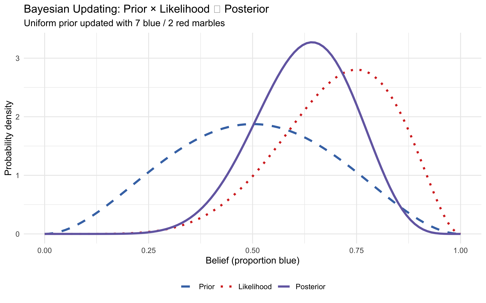
The posterior is narrower than either source alone — combining information increases certainty. Its peak lies between prior and likelihood, but closer to the likelihood because the evidence was relatively strong. The bottom line: Bayesian integration is not averaging; it is precision-weighted combination.
10.5.2 Bayesian Models in Cognitive Science
Bayesian cognitive models have been successfully applied to:
- Perception: combining multi-sensory cues (visual, auditory, tactile) into a unified percept.
- Learning: updating beliefs from observation and instruction.
- Decision-making: weighing different evidence sources when making choices.
- Social cognition: integrating others’ opinions with one’s own knowledge.
- Psychopathology: understanding schizophrenia and autism in terms of atypical Bayesian inference — hyper-precise priors, reduced likelihood weighting, or altered social learning.
10.7 The Three Models
This chapter develops and compares three competing models of evidence integration, ordered by increasing flexibility.
10.7.1 Model 1: Simple Bayesian Agent (SBA)
The SBA assigns unit weight per pseudo-marble to both evidence sources — meaning each observed (or encoded) marble contributes exactly one pseudocount regardless of its origin. Because direct and social evidence have different encoded sample sizes (\(n_1 = 8\) vs \(n_2 = 3\)), the SBA is not symmetric in its maximum influence: direct evidence can shift the posterior up to 2.67× more than social evidence. Its only structural choice is the Jeffreys prior pseudo-count \(\alpha_0 = \beta_0 = 0.5\). For trial \(i\):
\[y_i \sim \text{BetaBinomial}(1,\ \alpha_i,\ \beta_i)\] \[\alpha_i = 0.5 + k_{1,i} + k_{2,i}\] \[\beta_i = 0.5 + (n_{1,i} - k_{1,i}) + (n_{2,i} - k_{2,i})\]
The SBA has no free parameters — it is a fully specified prediction machine.
10.7.2 Model 2: Proportional Bayesian Agent (PBA)
The PBA encodes the hypothesis that trust is a zero-sum attentional budget: whatever weight is allocated to direct evidence is subtracted from social evidence. A single free parameter \(p \in [0, 1]\) governs this allocation:
\[y_i \sim \text{BetaBinomial}(1,\ \alpha_i,\ \beta_i)\] \[\alpha_i = 0.5 + p \cdot k_{1,i} + (1-p) \cdot k_{2,i}\] \[\beta_i = 0.5 + p \cdot (n_{1,i} - k_{1,i}) + (1-p) \cdot (n_{2,i} - k_{2,i})\]
where \(p \to 1\) means social evidence is ignored; \(p \to 0\) means direct evidence is ignored. The PBA has one free parameter: \(p\). Note that \(p = 0.5\) does not produce equal influence from both sources, because the two pools have different sizes: at \(p = 0.5\), direct evidence contributes up to \(0.5 \times 8 = 4\) pseudocounts while social evidence contributes at most \(0.5 \times 3 = 1.5\). True equal maximum contribution from both sources would require \(p \cdot 8 = (1-p) \cdot 3\), yielding \(p \approx 0.27\). While \(p = 0.5\) does recover behaviour structurally close to the SBA (preserving proportional weighting within each source), it should not be read as “balanced” integration.
Cognitive interpretation of the PBA: The PBA treats integration as a competition between two evidence sources. The total evidence budget is fixed at 1 — an agent cannot simultaneously overweight both sources. This contrasts with the WBA below, where the two sources are evaluated independently.
10.7.3 Model 3: Weighted Bayesian Agent (WBA)
The WBA relaxes the zero-sum constraint. The two weight parameters \(w_d > 0\) and \(w_s > 0\) scale direct and social evidence independently:
\[y_i \sim \text{BetaBinomial}(1,\ \alpha_i,\ \beta_i)\] \[\alpha_i = 0.5 + w_d \cdot k_{1,i} + w_s \cdot k_{2,i}\] \[\beta_i = 0.5 + w_d \cdot (n_{1,i} - k_{1,i}) + w_s \cdot (n_{2,i} - k_{2,i})\]
A weight of 1.0 means the agent treats each pseudo-marble at face value; less than 1.0 means downweighting (scepticism); greater than 1.0 means overweighting. Negative weights are not assigned a prior — they would imply anti-correlated updating, which has no cognitive interpretation in this task. One interpretive caution: because social evidence is encoded as total2 = 3 pseudo-marbles when the actual sample was 8, a participant who correctly intuits that the other person saw 8 marbles might rationally apply \(w_s \approx 8/3 \approx 2.67\) simply to compensate for the encoding approximation, not because they genuinely over-trust the social source. Recovered \(w_s\) values should therefore be read as trust relative to the encoding, not as an absolute measure of social reliance.
The WBA has two free parameters: \(w_d\) and \(w_s\).
Comparing the three models: The SBA fixes both weights at 1 (0 free parameters). The PBA allows differential allocation but not differential scaling (1 free parameter). The WBA allows both allocation and scaling to vary independently (2 free parameters). LOO model comparison will arbitrate which level of flexibility the data support. Each model encodes a distinct cognitive hypothesis, not merely a different number of parameters.
Identifiability note — WBA: \(w_d\) and \(w_s\) are jointly identified by the differential pattern of choices across trials where direct and social evidence conflict. With the full grid of 9 × 4 evidence combinations (repeated), both parameters are well-separated in the likelihood. We verify this computationally in the SBC section.
Identifiability note — PBA: \(p\) is identified whenever direct and social evidence point in conflicting directions. With 9 × 4 evidence combinations, the PBA is well identified. We verify this in SBC below.
Extension: estimating the effective sample size of social evidence. Rather than fixing
total2 = 3, one can treat the effective social sample size \(n_s > 0\) as a free parameter and let the data determine how many marble-equivalents the social signal is worth. Keeping \(k_{2,i}\) as the ordinal level (0–3) and floating \(n_s\) as the denominator, the WBA becomes: \[\alpha_i = 0.5 + w_d \cdot k_{1,i} + w_s \cdot k_{2,i}\] \[\beta_i = 0.5 + w_d \cdot (8 - k_{1,i}) + w_s \cdot (n_s - k_{2,i})\] with, for example, \(n_s \sim \text{Half-Normal}(0, 8)\), reflecting that the other person’s true sample was at most 8 marbles. In Stan,n_sis declared asreal<lower=3>(lower-bounded to prevent \(n_s < k_{2,i} = 3\)) and its log-prior added totarget. One practical caution: \(n_s\) and \(w_s\) are partially collinear — only the products \(w_s \cdot k_{2,i}\) and \(w_s \cdot (n_s - k_{2,i})\) appear in the likelihood. A strong prior on \(n_s\), or fixing it and freeing only \(w_s\), is advisable unless the evidence grid is sufficiently dense to separate them via SBC.
10.8 R Implementations
Before touching Stan, we implement the models in R to build intuition and generate simulated agent data.
10.8.1 The Beta-Binomial Integration Function
# Compute the posterior Beta parameters and summary statistics
# for a single trial of evidence integration.
#
# alpha_prior = beta_prior = 0.5: Jeffreys prior (parameterisation-invariant).
# Returns: list with alpha_post, beta_post, expected_rate,
# ci_lower, ci_upper, choice (based on expected_rate > 0.5)
betaBinomialModel <- function(alpha_prior = 0.5, beta_prior = 0.5,
blue1, total1, blue2, total2,
w_direct = 1, w_social = 1) {
alpha_post <- alpha_prior + w_direct * blue1 + w_social * blue2
beta_post <- beta_prior + w_direct * (total1 - blue1) +
w_social * (total2 - blue2)
expected_rate <- alpha_post / (alpha_post + beta_post)
ci_lower <- qbeta(0.025, alpha_post, beta_post)
ci_upper <- qbeta(0.975, alpha_post, beta_post)
list(
alpha_post = alpha_post,
beta_post = beta_post,
expected_rate = expected_rate,
ci_lower = ci_lower,
ci_upper = ci_upper,
choice = ifelse(expected_rate > 0.5, "Blue", "Red")
)
}10.8.2 Simulating the Evidence Space
total1 <- 8 # direct evidence sample size (constant)
total2 <- 3 # social evidence total signals (constant)
scenarios <- expand_grid(
blue1 = seq(0, 8, 1),
blue2 = seq(0, 3, 1)
) |>
mutate(red1 = total1 - blue1, red2 = total2 - blue2)
# SBA predictions (w_direct = w_social = 1, Jeffreys prior)
sim_data <- scenarios |>
pmap_dfr(function(blue1, red1, blue2, red2) {
result <- betaBinomialModel(0.5, 0.5, blue1, total1, blue2, total2)
tibble(
blue1 = blue1,
blue2 = blue2,
expected_rate = result$expected_rate,
ci_lower = result$ci_lower,
ci_upper = result$ci_upper,
choice = result$choice
)
}) |>
mutate(
social_evidence = factor(
blue2, levels = 0:3,
labels = c("Clear Red", "Maybe Red", "Maybe Blue", "Clear Blue")
)
)10.8.3 Visualising Bayesian Integration
ggplot(sim_data,
aes(x = blue1, y = expected_rate,
colour = social_evidence, group = social_evidence)) +
geom_ribbon(aes(ymin = ci_lower, ymax = ci_upper,
fill = social_evidence), alpha = 0.15, colour = NA) +
geom_line(linewidth = 1) +
geom_point(size = 3) +
geom_hline(yintercept = 0.5, linetype = "dashed", colour = "grey50") +
scale_x_continuous(breaks = 0:8) +
scale_colour_brewer(palette = "Set1") +
scale_fill_brewer(palette = "Set1") +
coord_cartesian(ylim = c(0, 1)) +
labs(
title = "Simple Bayesian Agent: Evidence Integration",
subtitle = "Expected proportion with 95% credible intervals",
x = "Blue marbles in direct sample (out of 8)",
y = "P(next marble = blue)",
colour = "Social evidence",
fill = "Social evidence"
) +
theme(legend.position = "bottom")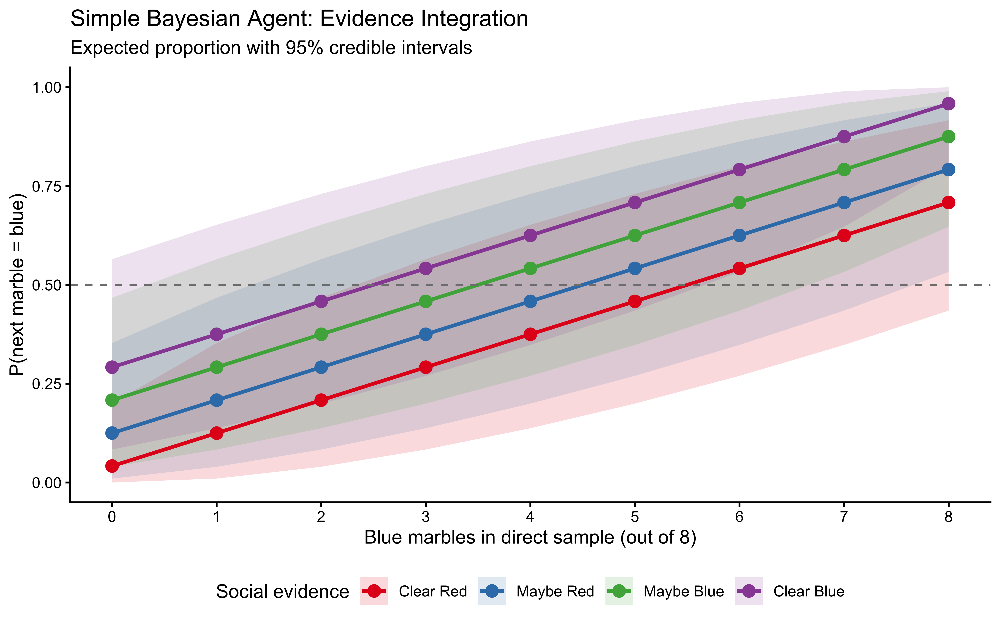
The influence of social evidence is greatest when direct evidence is ambiguous (near 4 blue marbles) and weakest at the extremes. This is the signature Bayesian property: stronger evidence dominates weaker evidence.
10.8.4 How the BetaBinomial Generates a Distribution of Choices
The plot above shows expected rates — the posterior mean of \(\theta\) for each evidence combination. This is useful for intuition but obscures something important about how the model actually generates behaviour.
The BetaBinomial likelihood is not a deterministic threshold rule. It describes a two-step stochastic process:
- Draw a belief: Sample the true proportion \(\theta \sim \text{Beta}(\alpha, \beta)\), representing genuine uncertainty about the jar’s composition.
- Draw a choice: Given that \(\theta\), sample a binary choice \(y \sim \text{Bernoulli}(\theta)\).
The consequence is that even when the posterior mean is 0.70 in favour of blue, the agent will not choose blue exactly 70% of the time in a perfectly mechanical way. There is variability from two sources simultaneously: uncertainty about what the jar proportion actually is (step 1), and the irreducible randomness of acting on that belief with a single guess (step 2). This variability is not noise added on top of the model — it is the model. The Beta distribution encodes what a rational agent should believe; the Bernoulli draw captures the randomness of a single decision.
This two-stage structure has a measurable implication: the BetaBinomial has greater variance than a Binomial with the same mean. This excess variance is called overdispersion, and it arises precisely because \(\theta\) must itself be sampled from the Beta rather than being known.
# Illustrate the two-step BetaBinomial sampling for a single scenario.
# Scenario: 4 blue of 8 direct + 2 blue of 3 social (Jeffreys prior)
alpha_demo <- 0.5 + 4 + 2 # = 6.5
beta_demo <- 0.5 + 4 + 1 # = 5.5
n_sims <- 10000
set.seed(42)
# Step 1: sample theta from the posterior Beta
theta_draws <- rbeta(n_sims, alpha_demo, beta_demo)
# Step 2: sample choice from Bernoulli(theta)
choice_draws <- rbinom(n_sims, 1, theta_draws)
expected_rate_demo <- alpha_demo / (alpha_demo + beta_demo)
p_theta <- tibble(theta = theta_draws) |>
ggplot(aes(x = theta)) +
geom_histogram(bins = 80, fill = "#4575b4", alpha = 0.7) +
geom_vline(xintercept = expected_rate_demo,
colour = "#d73027", linewidth = 1.2, linetype = "dashed") +
scale_x_continuous(limits = c(0, 1)) +
labs(
title = "Step 1: Distribution of sampled beliefs",
subtitle = sprintf(
"Beta(%.1f, %.1f) | E[θ] = %.2f (red dashed)",
alpha_demo, beta_demo, expected_rate_demo
),
x = expression(theta),
y = "Count"
)
p_choice <- tibble(
choice = factor(choice_draws, levels = c(0, 1),
labels = c("Red (0)", "Blue (1)"))
) |>
ggplot(aes(x = choice, fill = choice)) +
geom_bar(alpha = 0.8) +
geom_text(
stat = "count",
aes(label = scales::percent(after_stat(count / sum(count)), accuracy = 0.1)),
vjust = -0.4, size = 4
) +
scale_fill_manual(
values = c("Red (0)" = "#d73027", "Blue (1)" = "#4575b4")
) +
coord_cartesian(ylim = c(0, n_sims * 0.85)) +
labs(
title = "Step 2: Distribution of binary choices",
subtitle = sprintf(
"P(choose blue) = %.2f — close to E[θ] but with BetaBinomial overdispersion",
mean(choice_draws)
),
x = NULL, y = "Count", fill = NULL
) +
theme(legend.position = "none")
p_theta + p_choice +
plot_annotation(
title = "The BetaBinomial Two-Step Process",
subtitle = paste(
"Scenario: 4 of 8 blue (direct) + 2 of 3 blue (social), Jeffreys prior.",
"\nLeft: uncertainty about θ. Right: binary choices that uncertainty produces."
)
)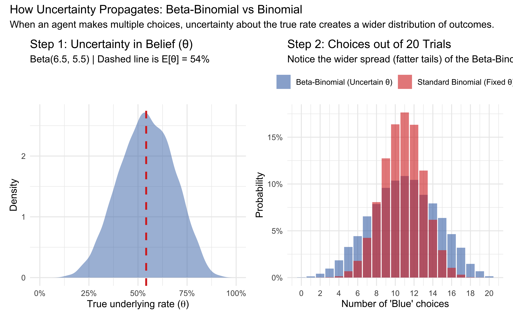
The left panel shows that even in a relatively informative scenario (11 total observations), there is genuine uncertainty about \(\theta\). The right panel shows that this uncertainty propagates into choices: the agent does not produce a deterministic 68% blue rate but a distribution of outcomes whose spread exceeds what a Binomial with \(p = 0.68\) would produce.
# Quantify overdispersion across the evidence grid.
# BetaBinomial variance vs Binomial variance for the same expected rate.
# Excess = fingerprint of belief uncertainty.
overdispersion_data <- expand_grid(
blue1 = 0:8,
blue2 = 0:3
) |>
mutate(
alpha_p = 0.5 + blue1 + blue2,
beta_p = 0.5 + (8 - blue1) + (3 - blue2),
theta_hat = alpha_p / (alpha_p + beta_p),
# BetaBinomial variance for a single Bernoulli draw (n=1)
var_bb = (alpha_p * beta_p) /
((alpha_p + beta_p)^2 * (alpha_p + beta_p + 1)),
# Binomial variance (Bernoulli)
var_binom = theta_hat * (1 - theta_hat),
excess = var_bb - var_binom,
social_evidence = factor(
blue2, levels = 0:3,
labels = c("Clear Red", "Maybe Red", "Maybe Blue", "Clear Blue")
)
)
ggplot(overdispersion_data,
aes(x = blue1, y = excess,
colour = social_evidence, group = social_evidence)) +
geom_line(linewidth = 1) +
geom_point(size = 2) +
scale_colour_brewer(palette = "Set1") +
scale_x_continuous(breaks = 0:8) +
labs(
title = "BetaBinomial Overdispersion Across Evidence Combinations",
subtitle = paste(
"Excess variance = Var(BetaBinomial) − Var(Binomial) for the same mean.",
"\nHighest when evidence is ambiguous (near 4 blue direct)."
),
x = "Blue marbles in direct sample (out of 8)",
y = "Excess variance from belief uncertainty",
colour = "Social evidence"
) +
theme(legend.position = "bottom")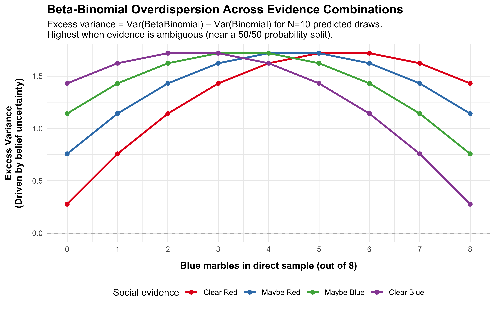
Overdispersion is greatest when evidence is ambiguous — near 4 blue marbles direct, where the Beta posterior is widest and \(\theta\) is least constrained. This has a concrete implication for model checking: if real participants produce choices that are more variable than a Binomial with \(p = \hat{\theta}\) would predict, that is not a misspecification — it is exactly what the BetaBinomial predicts. If choices are less variable (more deterministic than the model allows), the LOO-PIT will show a hump-shaped histogram, signalling that a threshold decision rule rather than probabilistic sampling better describes the data.
10.8.5 Examining Belief Distributions for Selected Scenarios
# Jeffreys prior: alpha0 = beta0 = 0.5
simpleBayesianDistributions <- function(blue1, red1, blue2, red2) {
theta <- seq(0.001, 0.999, length.out = 200)
tibble(
theta = theta,
prior = dbeta(theta, 0.5, 0.5),
direct = dbeta(theta, 0.5 + blue1, 0.5 + red1),
social = dbeta(theta, 0.5 + blue2, 0.5 + red2),
posterior = dbeta(theta, 0.5 + blue1 + blue2, 0.5 + red1 + red2)
)
}
selected_scenarios <- expand_grid(
blue1 = c(1, 4, 7),
blue2 = c(0, 1, 2, 3)
)
distribution_data <- selected_scenarios |>
pmap_dfr(function(blue1, blue2) {
simpleBayesianDistributions(
blue1, total1 - blue1, blue2, total2 - blue2
) |>
mutate(
blue1 = blue1,
blue2 = blue2,
social_evidence = factor(
blue2, levels = 0:3,
labels = c("Clear Red", "Maybe Red", "Maybe Blue", "Clear Blue")
)
)
})
ggplot(distribution_data) +
geom_line(aes(x = theta, y = prior),
colour = "grey60", linetype = "solid", linewidth = 0.5) +
geom_area(aes(x = theta, y = posterior),
fill = "#756bb1", alpha = 0.3) +
geom_line(aes(x = theta, y = posterior),
colour = "#756bb1", linewidth = 1.2) +
geom_line(aes(x = theta, y = direct, colour = "Direct"),
linewidth = 0.9, linetype = "dashed") +
geom_line(aes(x = theta, y = social, colour = "Social"),
linewidth = 0.9, linetype = "dashed") +
facet_grid(
blue2 ~ blue1,
labeller = labeller(
blue1 = function(x) paste("Direct:", x, "blue"),
blue2 = function(x) paste("Social:", x, "blue")
)
) +
scale_colour_manual(values = c("Direct" = "#4575b4", "Social" = "#d73027")) +
labs(
title = "Bayesian Evidence Integration: Full Distributions",
subtitle = "Grey = prior; dashed = individual sources; purple area = posterior",
x = "Proportion of blue marbles (θ)",
y = "Probability density",
colour = "Evidence type"
) +
theme(
legend.position = "bottom",
strip.text = element_text(size = 8),
axis.text = element_text(size = 6)
)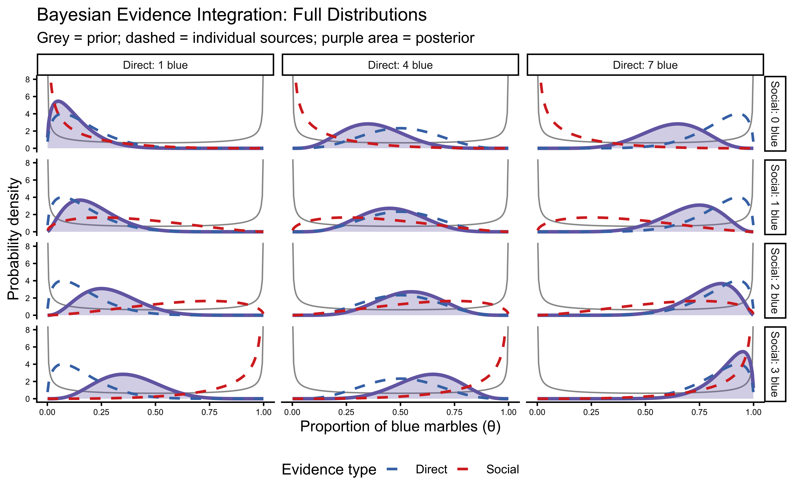
10.8.6 The Weighted Bayesian Agent: Mathematical Extension
The WBA extends the SBA by introducing weight parameters \(w_d\) and \(w_s\), keeping the same Jeffreys prior pseudo-count \(\alpha_0 = \beta_0 = 0.5\):
\[\alpha_\text{post} = 0.5 + w_d \cdot k_1 + w_s \cdot k_2\] \[\beta_\text{post} = 0.5 + w_d \cdot (n_1 - k_1) + w_s \cdot (n_2 - k_2)\]
Cognitively, \(w_d > 1\) means the agent overweights direct evidence (treats observations as more diagnostic than they are); \(w_s < 1\) means social information is discounted. A weight of 0 means the source is ignored entirely.
This is not simple averaging. Because the weights multiply the count of evidence before adding it to the Beta parameters, they modulate the effective sample size of each source. The natural Beta-distribution normalisation still handles uncertainty correctly.
agents <- tibble(
agent_type = c("Balanced", "Self-Focused", "Socially-Influenced"),
weight_direct = c(1.0, 1.5, 0.7),
weight_social = c(1.0, 0.5, 2.0)
)
evidence_combinations <- expand_grid(
blue1 = 0:8,
blue2 = 0:3,
total1 = 8,
total2 = 3
)
generate_agent_decisions <- function(weight_direct, weight_social,
evidence_df, n_samples = 5) {
evidence_df |>
slice(rep(seq_len(n()), each = n_samples)) |>
group_by(blue1, blue2, total1, total2) |>
mutate(sample_id = seq_len(n())) |>
ungroup() |>
pmap_dfr(function(blue1, blue2, total1, total2, sample_id) {
result <- betaBinomialModel(
0.5, 0.5, blue1, total1, blue2, total2,
w_direct = weight_direct, w_social = weight_social
)
# Choice is sampled from the posterior predictive (BetaBinomial)
alpha_p <- result$alpha_post
beta_p <- result$beta_post
p <- rbeta(1, alpha_p, beta_p)
tibble(
sample_id = sample_id,
blue1 = blue1,
blue2 = blue2,
total1 = total1,
total2 = total2,
expected_rate = result$expected_rate,
choice = rbinom(1, 1, p),
choice_label = ifelse(choice == 1, "Blue", "Red")
)
})
}
simulation_results <- agents |>
pmap_dfr(function(agent_type, weight_direct, weight_social) {
generate_agent_decisions(weight_direct, weight_social,
evidence_combinations, n_samples = 5) |>
mutate(agent_type = agent_type)
}) |>
mutate(
social_evidence = factor(
blue2, levels = 0:3,
labels = c("Clear Red", "Maybe Red", "Maybe Blue", "Clear Blue")
),
agent_type = factor(
agent_type,
levels = c("Balanced", "Self-Focused", "Socially-Influenced")
)
)
# Quick visualisation
ggplot(
simulation_results |>
group_by(agent_type, blue1, social_evidence) |>
summarise(p_blue = mean(choice), .groups = "drop"),
aes(x = blue1, y = p_blue, colour = social_evidence, group = social_evidence)
) +
geom_line(linewidth = 1) +
geom_point(size = 2) +
geom_hline(yintercept = 0.5, linetype = "dashed", colour = "grey50") +
facet_wrap(~ agent_type) +
scale_colour_brewer(palette = "Set1") +
scale_x_continuous(breaks = 0:8) +
coord_cartesian(ylim = c(0, 1)) +
labs(
title = "Simulated Choice Proportions by Agent Type",
x = "Blue marbles in direct sample",
y = "P(choose blue)",
colour = "Social evidence"
) +
theme(legend.position = "bottom")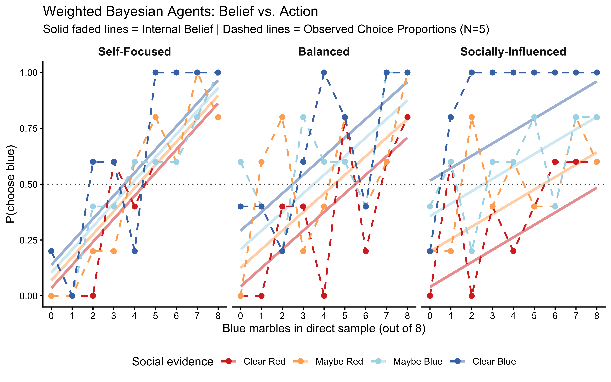
10.8.7 How the WBA Resolves Conflicting Evidence
A key cognitive question is: how does the balance of weights determine an agent’s choice when direct and social evidence point in opposite directions? We can answer this visually by sweeping \(w_d\) and \(w_s\) across a grid and plotting the decision boundary — the contour at which the agent is indifferent between blue and red.
# Two conflict scenarios from the original chapter
scenario_strong <- list(blue1 = 7L, total1 = 8L, blue2 = 0L, total2 = 3L)
scenario_weak <- list(blue1 = 5L, total1 = 8L, blue2 = 0L, total2 = 3L)
evaluate_conflict <- function(scenario) {
expand_grid(
weight_direct = seq(0, 2, by = 0.05),
weight_social = seq(0, 2, by = 0.05)
) |>
mutate(
alpha_post = 0.5 + weight_direct * scenario$blue1 +
weight_social * scenario$blue2,
beta_post = 0.5 + weight_direct * (scenario$total1 - scenario$blue1) +
weight_social * (scenario$total2 - scenario$blue2),
expected_rate = alpha_post / (alpha_post + beta_post)
)
}
conflict_strong <- evaluate_conflict(scenario_strong) |> mutate(scenario = "Strong direct (7/8 blue)\nvs. Strong social (0/3 blue)")
conflict_weak <- evaluate_conflict(scenario_weak) |> mutate(scenario = "Weak direct (5/8 blue)\nvs. Strong social (0/3 blue)")
conflict_all <- bind_rows(conflict_strong, conflict_weak)
ggplot(conflict_all,
aes(x = weight_direct, y = weight_social, fill = expected_rate)) +
geom_tile() +
geom_contour(aes(z = expected_rate), breaks = 0.5,
colour = "black", linewidth = 1) +
scale_fill_gradient2(
low = "#d73027", mid = "white", high = "#4575b4",
midpoint = 0.5, limits = c(0, 1)
) +
facet_wrap(~ scenario) +
coord_fixed() +
labs(
title = "Decision Boundaries Under Conflicting Evidence",
subtitle = "Black line = indifference boundary (P(blue) = 0.5).\nAbove/left of line: agent chooses Red; below/right: agent chooses Blue.",
x = "Weight on direct evidence (w_d)",
y = "Weight on social evidence (w_s)",
fill = "P(blue)"
) +
theme(legend.position = "right")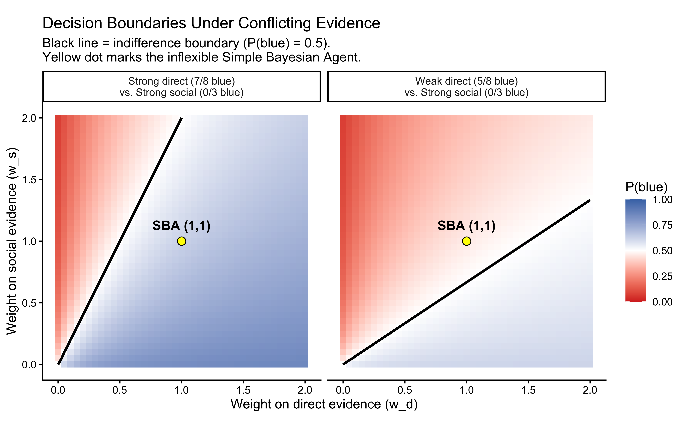
Reading the plot: Each cell’s colour shows the WBA’s predicted probability of choosing blue for that weight combination. The black contour line marks the decision boundary — the set of \((w_d, w_s)\) pairs at which the two sources of evidence exactly cancel. Above and to the left of this line, social evidence wins (agent chooses red); below and to the right, direct evidence wins (agent chooses blue).
Two insights stand out:
Evidence strength shifts the boundary. In the strong-direct scenario (7/8 blue), the boundary is pushed far toward high \(w_s\) — it takes a very large social weight to overcome the direct evidence for blue. In the weak-direct scenario (5/8), the boundary sits closer to the diagonal, meaning even moderate social weights can reverse the decision.
The SBA is a single point. The Simple Bayesian Agent always sits at \((w_d, w_s) = (1, 1)\). Wherever that point falls relative to the boundary determines its prediction. For the strong-direct scenario, \((1,1)\) is comfortably below the boundary (chooses blue). For the weak-direct scenario, \((1,1)\) is again below but closer to the boundary. The SBA cannot adjust — the WBA can.
10.9 Stan Implementation
10.9.1 Model 1: Simple Bayesian Agent
SimpleAgent_stan <- "
// Simple Bayesian Agent — Jeffreys prior (alpha0 = beta0 = 0.5).
// No free parameters: the SBA is a deterministic prediction machine.
data {
int<lower=1> N;
array[N] int<lower=0, upper=1> choice;
array[N] int<lower=0> blue1;
array[N] int<lower=0> total1;
array[N] int<lower=0> blue2;
array[N] int<lower=0> total2;
}
transformed data {
// Jeffreys prior for a binomial proportion: Beta(0.5, 0.5).
// Parameterisation-invariant; concentrates slightly more mass near 0 and 1
// than the uniform Beta(1, 1). With 8+ observations per trial the
// difference is negligible, but the choice is principled.
real alpha0 = 0.5;
real beta0 = 0.5;
}
parameters {
// No free parameters.
}
model {
for (i in 1:N) {
real alpha_post = alpha0 + blue1[i] + blue2[i];
real beta_post = beta0
+ (total1[i] - blue1[i])
+ (total2[i] - blue2[i]);
target += beta_binomial_lpmf(choice[i] | 1, alpha_post, beta_post);
}
}
generated quantities {
vector[N] log_lik;
array[N] int prior_pred;
array[N] int posterior_pred;
for (i in 1:N) {
real alpha_post = alpha0 + blue1[i] + blue2[i];
real beta_post = beta0
+ (total1[i] - blue1[i])
+ (total2[i] - blue2[i]);
log_lik[i] = beta_binomial_lpmf(choice[i] | 1, alpha_post, beta_post);
posterior_pred[i] = beta_binomial_rng(1, alpha_post, beta_post);
// Prior predictive: Jeffreys pseudo-counts only, no trial evidence
prior_pred[i] = beta_binomial_rng(1, alpha0, beta0);
}
}
"
write_stan_file(SimpleAgent_stan,
dir = "stan/",
basename = "ch9_simple_agent.stan")## [1] "/Users/au209589/Dropbox/Teaching/AdvancedCognitiveModeling23_book/stan/ch9_simple_agent.stan"10.9.2 Model 2: Proportional Bayesian Agent
ProportionalAgent_stan <- "
// Proportional Bayesian Agent (PBA).
// p in [0,1] allocates the unit evidence budget between direct and social.
// p = 0.5 approximates the SBA; p -> 1 ignores social; p -> 0 ignores direct.
// Jeffreys prior pseudo-counts (alpha0 = beta0 = 0.5) consistent with SBA.
data {
int<lower=1> N;
array[N] int<lower=0, upper=1> choice;
array[N] int<lower=0> blue1;
array[N] int<lower=0> total1;
array[N] int<lower=0> blue2;
array[N] int<lower=0> total2;
}
parameters {
// Allocation of the unit evidence budget to direct evidence.
// Beta(2, 2): weakly bell-shaped, symmetric about 0.5, keeps
// prior mass away from the boundaries where geometry can degrade.
real<lower=0, upper=1> p;
}
model {
target += beta_lpdf(p | 2, 2);
profile(\"likelihood\") {
for (i in 1:N) {
real alpha_post = 0.5
+ p * blue1[i]
+ (1.0 - p) * blue2[i];
real beta_post = 0.5
+ p * (total1[i] - blue1[i])
+ (1.0 - p) * (total2[i] - blue2[i]);
target += beta_binomial_lpmf(choice[i] | 1, alpha_post, beta_post);
}
}
}
generated quantities {
vector[N] log_lik;
array[N] int prior_pred;
array[N] int posterior_pred;
real p_prior = beta_rng(2, 2);
for (i in 1:N) {
real alpha_post = 0.5 + p * blue1[i] + (1.0 - p) * blue2[i];
real beta_post = 0.5
+ p * (total1[i] - blue1[i])
+ (1.0 - p) * (total2[i] - blue2[i]);
log_lik[i] = beta_binomial_lpmf(choice[i] | 1, alpha_post, beta_post);
posterior_pred[i] = beta_binomial_rng(1, alpha_post, beta_post);
// Prior predictive using sampled prior p
real ap = 0.5 + p_prior * blue1[i] + (1.0 - p_prior) * blue2[i];
real bp = 0.5
+ p_prior * (total1[i] - blue1[i])
+ (1.0 - p_prior) * (total2[i] - blue2[i]);
prior_pred[i] = beta_binomial_rng(1, ap, bp);
}
}
"
write_stan_file(ProportionalAgent_stan,
dir = "stan/",
basename = "ch9_proportional_agent.stan")## [1] "/Users/au209589/Dropbox/Teaching/AdvancedCognitiveModeling23_book/stan/ch9_proportional_agent.stan"10.9.3 Model 3: Weighted Bayesian Agent
WeightedAgent_stan <- "
// Weighted Bayesian Agent.
// w_direct, w_social >= 0 scale the effective count of each evidence source.
// Jeffreys prior pseudo-counts (0.5) consistent with SBA and PBA.
data {
int<lower=1> N;
array[N] int<lower=0, upper=1> choice;
array[N] int<lower=0> blue1;
array[N] int<lower=0> total1;
array[N] int<lower=0> blue2;
array[N] int<lower=0> total2;
}
parameters {
real<lower=0> weight_direct;
real<lower=0> weight_social;
}
model {
// Priors on log scale (equivalent to log-normal in natural scale).
// lognormal(0, 0.5) concentrates mass roughly in [0.2, 5],
// spanning strong underweighting to strong overweighting.
target += lognormal_lpdf(weight_direct | 0, 0.5);
target += lognormal_lpdf(weight_social | 0, 0.5);
profile(\"likelihood\") {
for (i in 1:N) {
real alpha_post = 0.5
+ weight_direct * blue1[i]
+ weight_social * blue2[i];
real beta_post = 0.5
+ weight_direct * (total1[i] - blue1[i])
+ weight_social * (total2[i] - blue2[i]);
target += beta_binomial_lpmf(choice[i] | 1, alpha_post, beta_post);
}
}
}
generated quantities {
vector[N] log_lik;
array[N] int prior_pred;
array[N] int posterior_pred;
// Prior samples for predictive checks
real wd_prior = lognormal_rng(0, 0.5);
real ws_prior = lognormal_rng(0, 0.5);
for (i in 1:N) {
// Posterior predictions
real alpha_post = 0.5
+ weight_direct * blue1[i]
+ weight_social * blue2[i];
real beta_post = 0.5
+ weight_direct * (total1[i] - blue1[i])
+ weight_social * (total2[i] - blue2[i]);
log_lik[i] = beta_binomial_lpmf(choice[i] | 1, alpha_post, beta_post);
posterior_pred[i] = beta_binomial_rng(1, alpha_post, beta_post);
// Prior predictions using sampled prior weights
real ap = 0.5 + wd_prior * blue1[i] + ws_prior * blue2[i];
real bp = 0.5 + wd_prior * (total1[i] - blue1[i])
+ ws_prior * (total2[i] - blue2[i]);
prior_pred[i] = beta_binomial_rng(1, ap, bp);
}
}
"
write_stan_file(WeightedAgent_stan,
dir = "stan/",
basename = "ch9_weighted_agent.stan")## [1] "/Users/au209589/Dropbox/Teaching/AdvancedCognitiveModeling23_book/stan/ch9_weighted_agent.stan"10.10 Phase 1: Prior Predictive Checks
Before fitting to any data, we must confirm that the priors of each model generate cognitively plausible behaviour.
- SBA: The Jeffreys prior Beta(0.5, 0.5) gives a BetaBinomial marginal that is slightly U-shaped rather than flat — it places marginally more prior mass on confident choices, but with 11 total observations per trial this barely affects the prior predictive.
- PBA: The Beta(2, 2) prior on \(p\) is weakly bell-shaped around 0.5. We verify that this does not force predictions to be symmetric across all conditions.
- WBA: The lognormal(0, 0.5) prior on \(w_d\) and \(w_s\) spans roughly 0.2 to 5 — from strong underweighting to strong overweighting. If the prior concentrated mass only near 1.0, it would be essentially a tighter SBA. Checking the prior first confirms that the WBA can represent the full range of integration strategies before any data are seen.
set.seed(42)
n_prior <- 5000
# ── WBA: inspect prior on weight scale ──────────────────────────────
wd_prior_samples <- rlnorm(n_prior, meanlog = 0, sdlog = 0.5)
ws_prior_samples <- rlnorm(n_prior, meanlog = 0, sdlog = 0.5)
tibble(weight_direct = wd_prior_samples,
weight_social = ws_prior_samples) |>
pivot_longer(everything(), names_to = "parameter", values_to = "value") |>
ggplot(aes(x = value)) +
geom_histogram(bins = 60, fill = "#4575b4", alpha = 0.7) +
geom_vline(xintercept = 1, linetype = "dashed", colour = "black") +
scale_x_continuous(limits = c(0, 5)) +
facet_wrap(~ parameter) +
labs(
title = "Prior Predictive Check: WBA Weight Parameters",
subtitle = "Dashed line = unit weight (evidence taken at face value).\nlognormal(0, 0.5) spans underweighting to strong overweighting.",
x = "Weight value",
y = "Count"
)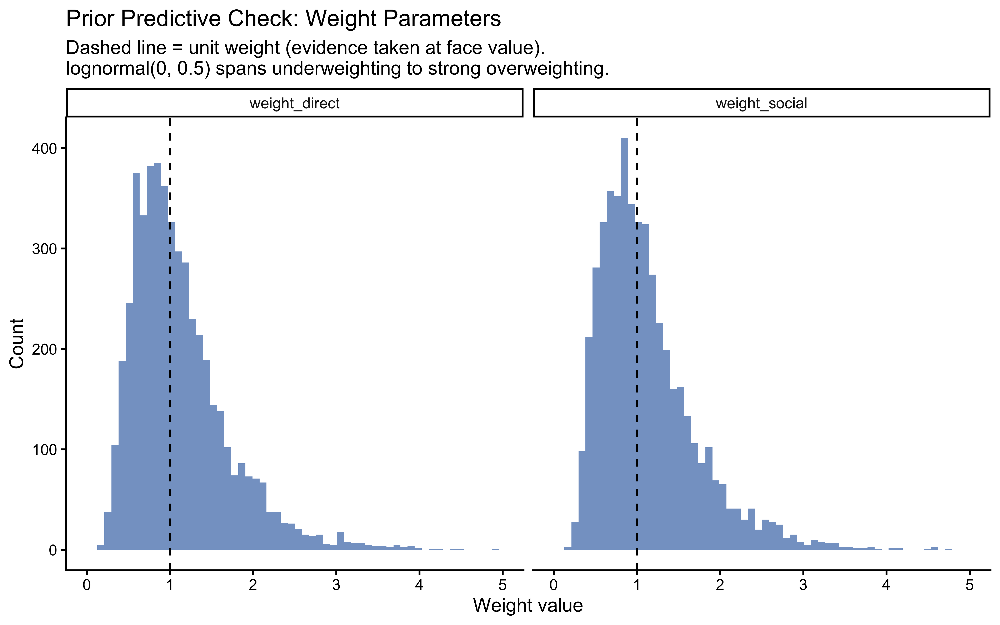
# ── PBA: inspect prior on allocation parameter p ────────────────────
tibble(p = rbeta(n_prior, 2, 2)) |>
ggplot(aes(x = p)) +
geom_histogram(bins = 60, fill = "#756bb1", alpha = 0.7) +
geom_vline(xintercept = 0.5, linetype = "dashed", colour = "black") +
labs(
title = "Prior Predictive Check: PBA Allocation Parameter p",
subtitle = "Beta(2, 2): weakly favours balanced integration, avoids hard boundaries.",
x = "p (proportion of budget to direct evidence)",
y = "Count"
)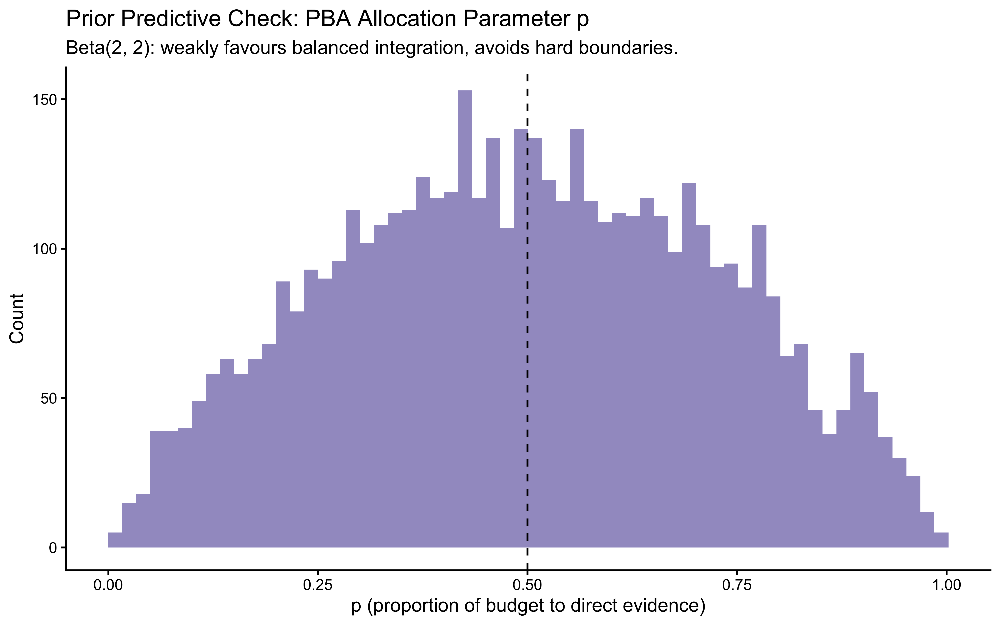
# ── Prior-predictive choices across the evidence grid: all three models ─
ppc_from_prior <- function(alpha_fn, beta_fn, n_rep = 200, label = "") {
evidence_combinations |>
slice(rep(seq_len(n()), times = n_rep)) |>
mutate(
alpha_p = alpha_fn(n(), blue1, blue2, total1, total2),
beta_p = beta_fn(n(), blue1, blue2, total1, total2),
theta = rbeta(n(), alpha_p, beta_p),
y = rbinom(n(), 1, theta)
) |>
group_by(blue1, blue2) |>
summarise(p_blue = mean(y), .groups = "drop") |>
mutate(
social_evidence = factor(
blue2, levels = 0:3,
labels = c("Clear Red", "Maybe Red", "Maybe Blue", "Clear Blue")
),
model = label
)
}
sba_ppc <- ppc_from_prior(
alpha_fn = function(n, b1, b2, ...) 0.5 + b1 + b2,
beta_fn = function(n, b1, b2, t1, t2) 0.5 + (t1 - b1) + (t2 - b2),
label = "SBA"
)
pba_ppc <- ppc_from_prior(
alpha_fn = function(n, b1, b2, ...) {
p_draw <- rbeta(n, 2, 2); 0.5 + p_draw * b1 + (1 - p_draw) * b2
},
beta_fn = function(n, b1, b2, t1, t2) {
p_draw <- rbeta(n, 2, 2)
0.5 + p_draw * (t1 - b1) + (1 - p_draw) * (t2 - b2)
},
label = "PBA"
)
wba_ppc <- ppc_from_prior(
alpha_fn = function(n, b1, b2, ...) {
wd <- rlnorm(n, 0, 0.5); ws <- rlnorm(n, 0, 0.5)
0.5 + wd * b1 + ws * b2
},
beta_fn = function(n, b1, b2, t1, t2) {
wd <- rlnorm(n, 0, 0.5); ws <- rlnorm(n, 0, 0.5)
0.5 + wd * (t1 - b1) + ws * (t2 - b2)
},
label = "WBA"
)
bind_rows(sba_ppc, pba_ppc, wba_ppc) |>
mutate(model = factor(model, levels = c("SBA", "PBA", "WBA"))) |>
ggplot(aes(x = blue1, y = p_blue,
colour = social_evidence, group = social_evidence)) +
geom_line(linewidth = 1) +
geom_point(size = 2) +
geom_hline(yintercept = 0.5, linetype = "dashed", colour = "grey50") +
scale_x_continuous(breaks = 0:8) +
scale_colour_brewer(palette = "Set1") +
coord_cartesian(ylim = c(0, 1)) +
facet_wrap(~ model) +
labs(
title = "Prior Predictive: Choice Proportions Across All Three Models",
subtitle = "Priors should not force extreme or flat predictions",
x = "Blue marbles in direct sample",
y = "Prior-predicted P(choose blue)",
colour = "Social evidence"
) +
theme(legend.position = "bottom")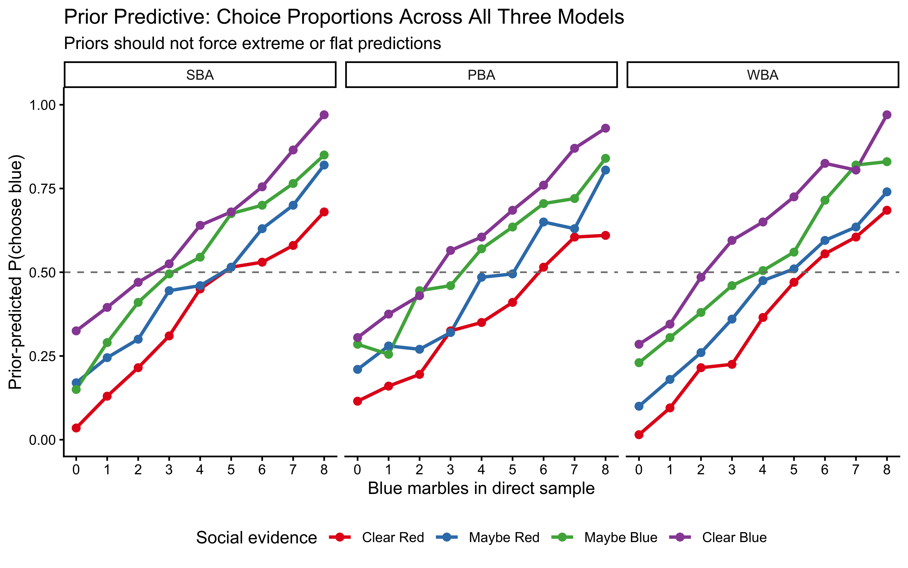
Interpretation: The SBA prior predictive is nearly flat across all conditions — the Jeffreys pseudo-count contributes negligibly against 11 observations. The PBA and WBA show structured gradients even under the prior, confirming that the prior is not degenerate, but with substantial uncertainty. None of the three priors force predictions to extreme values uniformly. All three pass the plausibility check.
10.11 Phase 3: Simulation Validation
Empirical fitting must never occur before simulation validation. We proceed in two steps: (1) single-fit parameter recovery to confirm the model can identify parameters from a known dataset; (2) SBC to certify that the inference engine is globally unbiased.
10.11.1 Preparing Data for Validation
prepare_stan_data <- function(df) {
list(
N = nrow(df),
choice = df$choice,
blue1 = df$blue1,
total1 = df$total1,
blue2 = df$blue2,
total2 = df$total2
)
}
sim_data_for_stan <- simulation_results |>
mutate(total1 = 8L, total2 = 3L)
balanced_data <- sim_data_for_stan |> filter(agent_type == "Balanced")
self_focused_data <- sim_data_for_stan |> filter(agent_type == "Self-Focused")
socially_influenced_data <- sim_data_for_stan |> filter(agent_type == "Socially-Influenced")
stan_data_balanced <- prepare_stan_data(balanced_data)
stan_data_self_focused <- prepare_stan_data(self_focused_data)
stan_data_socially_influenced <- prepare_stan_data(socially_influenced_data)10.11.3 Single-Fit Parameter Recovery
We fit the WBA to the Self-Focused agent (true \(w_d = 1.5\), \(w_s = 0.5\)) and the Socially-Influenced agent (true \(w_d = 0.7\), \(w_s = 2.0\)) to verify that the model recovers the generating parameters.
fit_recovery_self <- if (regenerate_simulations) {
fit <- mod_weighted$sample(
data = stan_data_self_focused,
seed = 101,
chains = 4,
parallel_chains = 4,
iter_warmup = 1000,
iter_sampling = 1000,
refresh = 0
)
fit$save_object("simmodels/ch9_fit_recovery_self.rds")
fit
} else {
readRDS("simmodels/ch9_fit_recovery_self.rds")
}## Running MCMC with 4 parallel chains...
##
## Chain 1 finished in 0.5 seconds.
## Chain 2 finished in 0.5 seconds.
## Chain 3 finished in 0.5 seconds.
## Chain 4 finished in 0.5 seconds.
##
## All 4 chains finished successfully.
## Mean chain execution time: 0.5 seconds.
## Total execution time: 3.3 seconds.fit_recovery_social <- if (regenerate_simulations) {
fit <- mod_weighted$sample(
data = stan_data_socially_influenced,
seed = 102,
chains = 4,
parallel_chains = 4,
iter_warmup = 1000,
iter_sampling = 1000,
refresh = 0
)
fit$save_object("simmodels/ch9_fit_recovery_social.rds")
fit
} else {
readRDS("simmodels/ch9_fit_recovery_social.rds")
}## Running MCMC with 4 parallel chains...## Chain 1 finished in 0.6 seconds.
## Chain 2 finished in 0.6 seconds.
## Chain 3 finished in 0.6 seconds.
## Chain 4 finished in 0.6 seconds.
##
## All 4 chains finished successfully.
## Mean chain execution time: 0.6 seconds.
## Total execution time: 3.5 seconds.# Visualise recovery
true_params <- tibble(
agent = c("Self-Focused", "Self-Focused",
"Socially-Influenced", "Socially-Influenced"),
parameter = rep(c("weight_direct", "weight_social"), 2),
true_value = c(1.5, 0.5, 0.7, 2.0)
)
recovery_draws <- bind_rows(
as_draws_df(fit_recovery_self$draws(c("weight_direct", "weight_social"))) |>
mutate(agent = "Self-Focused"),
as_draws_df(fit_recovery_social$draws(c("weight_direct", "weight_social"))) |>
mutate(agent = "Socially-Influenced")
) |>
pivot_longer(c(weight_direct, weight_social),
names_to = "parameter", values_to = "value")
ggplot(recovery_draws, aes(x = value)) +
geom_histogram(bins = 60, fill = "#4575b4", alpha = 0.7) +
geom_vline(data = true_params,
aes(xintercept = true_value),
colour = "#d73027", linewidth = 1.2, linetype = "dashed") +
facet_grid(agent ~ parameter, scales = "free") +
labs(
title = "Parameter Recovery: WBA",
subtitle = "Red dashed lines indicate true generating parameter values",
x = "Weight value",
y = "Posterior count"
)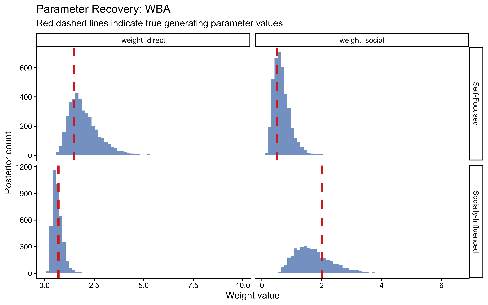
Both generating values fall within the bulk of their respective posteriors — a necessary (though not sufficient) condition for trust in the model’s identifiability.
10.11.4 Simulation-Based Calibration (SBC)
Single-fit recovery can succeed by chance. SBC provides a global certificate: if we sample parameters from the prior, simulate a dataset, fit the model, and rank the true parameter among the posterior draws, then under a correctly specified and well-sampled model those ranks must be uniformly distributed (Talts et al. 2018; Säilynoja et al. 2022).
We use ECDF-difference plots as the primary diagnostic (Säilynoja et al. 2022). A perfectly calibrated model produces a flat ECDF-diff at 0; a U-shaped curve indicates over-dispersed posteriors (prior too narrow); a hump-shaped curve indicates over-concentrated posteriors (prior too wide or data dominating).
Why run SBC before fitting to agent data? The WBA’s weight parameters are bounded (positive) and interact multiplicatively in the Beta-Binomial likelihood. These features can cause calibration failures that look like good posteriors — the sampler produces plausible-looking draws that are systematically biased. SBC catches this globally before the model touches empirical data. The PBA’s bounded \(p\) parameter requires its own SBC pass: the Beta(2,2) prior was chosen to avoid boundary geometry pathologies near \(p = 0\) or \(p = 1\), but this must be verified computationally.
n_sbc_datasets <- 1000 # minimum per cheatsheet
if (regenerate_simulations) {
N_sbc <- stan_data_self_focused$N
# ── WBA SBC generator ──────────────────────────────────────────────
sbc_generator <- SBC_generator_function(
function(N) {
wd <- rlnorm(1, 0, 0.5)
ws <- rlnorm(1, 0, 0.5)
ev <- evidence_combinations |>
slice_sample(n = N, replace = TRUE)
# Jeffreys prior pseudo-counts in SBC generator must match the model
alpha_p <- 0.5 + wd * ev$blue1 + ws * ev$blue2
beta_p <- 0.5 + wd * (ev$total1 - ev$blue1) +
ws * (ev$total2 - ev$blue2)
p_blue <- rbeta(N, alpha_p, beta_p)
choices <- rbinom(N, 1, p_blue)
list(
variables = list(weight_direct = wd, weight_social = ws),
generated = list(
N = N,
choice = choices,
blue1 = ev$blue1,
total1 = ev$total1,
blue2 = ev$blue2,
total2 = ev$total2
)
)
},
N = N_sbc
)
sbc_datasets <- generate_datasets(sbc_generator, n_sbc_datasets)
sbc_backend <- SBC::SBC_backend_cmdstan_sample(
mod_weighted,
chains = 2,
iter_warmup = 500,
iter_sampling = 500,
parallel_chains = 2,
refresh = 0,
show_messages = FALSE
)
sbc_results <- compute_SBC(sbc_datasets, sbc_backend, keep_fits = FALSE)
saveRDS(sbc_results, "simmodels/ch9_sbc_wba_results.rds")
# ── PBA SBC generator ──────────────────────────────────────────────
sbc_generator_pba <- SBC_generator_function(
function(N) {
p_true <- rbeta(1, 2, 2)
ev <- evidence_combinations |> slice_sample(n = N, replace = TRUE)
alpha_p <- 0.5 + p_true * ev$blue1 + (1 - p_true) * ev$blue2
beta_p <- 0.5 + p_true * (ev$total1 - ev$blue1) +
(1 - p_true) * (ev$total2 - ev$blue2)
theta <- rbeta(N, alpha_p, beta_p)
choices <- rbinom(N, 1, theta)
list(
variables = list(p = p_true),
generated = list(
N = N,
choice = choices,
blue1 = ev$blue1,
total1 = ev$total1,
blue2 = ev$blue2,
total2 = ev$total2
)
)
},
N = N_sbc
)
sbc_datasets_pba <- generate_datasets(sbc_generator_pba, n_sbc_datasets)
sbc_backend_pba <- SBC::SBC_backend_cmdstan_sample(
mod_proportional,
chains = 2,
iter_warmup = 500,
iter_sampling = 500,
parallel_chains = 2,
refresh = 0,
show_messages = FALSE
)
sbc_results_pba <- compute_SBC(sbc_datasets_pba, sbc_backend_pba,
keep_fits = FALSE)
saveRDS(sbc_results_pba, "simmodels/ch9_sbc_pba_results.rds")
} else {
sbc_results <- readRDS("simmodels/ch9_sbc_wba_results.rds")
sbc_results_pba <- readRDS("simmodels/ch9_sbc_pba_results.rds")
}
# ── Primary diagnostic: ECDF-difference plots ─────────────────────
p_sbc_wba <- SBC::plot_ecdf_diff(
sbc_results, variables = c("weight_direct", "weight_social")
) +
labs(
title = "SBC Calibration: Weighted Bayesian Agent",
subtitle = paste0("S = ", n_sbc_datasets,
" datasets. Flat line at 0 = perfect calibration.")
)
p_sbc_pba <- SBC::plot_ecdf_diff(sbc_results_pba, variables = "p") +
labs(
title = "SBC Calibration: Proportional Bayesian Agent",
subtitle = paste0("S = ", n_sbc_datasets,
" datasets. Boundary effects near 0/1 would appear as edge deflections.")
)
p_sbc_wba / p_sbc_pba
Interpreting the SBC plots: Both ECDF-difference curves should lie within the grey confidence bands (pointwise 95% intervals under the uniform null). For the PBA, pay particular attention to the tails near 0 and 1 — Beta(2,2) was chosen specifically to keep prior mass away from the boundaries, which would otherwise create funnel geometry in the sampler. Systematic deviations in either model must be resolved before proceeding to empirical fitting.
# Summary statistics: fraction of problematic ranks — both models
sbc_results$stats |>
group_by(variable) |>
summarise(n_datasets = n(), mean_rank = mean(rank),
sd_rank = sd(rank), .groups = "drop") |>
mutate(model = "WBA") |>
bind_rows(
sbc_results_pba$stats |>
group_by(variable) |>
summarise(n_datasets = n(), mean_rank = mean(rank),
sd_rank = sd(rank), .groups = "drop") |>
mutate(model = "PBA")
) |>
dplyr::select(model, variable, everything()) |>
knitr::kable(digits = 2, caption = "SBC Rank Summary (WBA and PBA)")| model | variable | n_datasets | mean_rank | sd_rank |
|---|---|---|---|---|
| WBA | weight_direct | 1000 | 49.58 | 28.94 |
| WBA | weight_social | 1000 | 49.30 | 29.13 |
| PBA | p | 1000 | 48.58 | 29.48 |
10.12 Phase 2: Fitting, Diagnostics, and Comparison
10.12.1 Fitting the Models
sampler_args <- list(
chains = 4,
parallel_chains = 4,
iter_warmup = 1000,
iter_sampling = 1000,
refresh = 0
)
agent_datasets <- list(
Balanced = stan_data_balanced,
`Self-Focused` = stan_data_self_focused,
`Socially-Influenced` = stan_data_socially_influenced
)
fit_or_load <- function(file, model, data, seed) {
if (regenerate_simulations) {
fit <- do.call(
model$sample,
c(list(data = data, seed = seed), sampler_args)
)
fit$save_object(file)
fit
} else {
readRDS(file)
}
}
# Simple agent fits
fit_simple_balanced <- fit_or_load(
"simmodels/ch9_fit_simple_balanced.rds", mod_simple,
stan_data_balanced, 201)## Running MCMC with 4 parallel chains...
##
## Chain 1 finished in 0.3 seconds.
## Chain 2 finished in 0.3 seconds.
## Chain 3 finished in 0.3 seconds.
## Chain 4 finished in 0.3 seconds.
##
## All 4 chains finished successfully.
## Mean chain execution time: 0.3 seconds.
## Total execution time: 3.2 seconds.fit_simple_self_focused <- fit_or_load(
"simmodels/ch9_fit_simple_self.rds", mod_simple,
stan_data_self_focused, 202)## Running MCMC with 4 parallel chains...
##
## Chain 1 finished in 0.3 seconds.
## Chain 2 finished in 0.3 seconds.
## Chain 3 finished in 0.3 seconds.
## Chain 4 finished in 0.3 seconds.
##
## All 4 chains finished successfully.
## Mean chain execution time: 0.3 seconds.
## Total execution time: 3.3 seconds.fit_simple_social <- fit_or_load(
"simmodels/ch9_fit_simple_social.rds", mod_simple,
stan_data_socially_influenced, 203)## Running MCMC with 4 parallel chains...
##
## Chain 1 finished in 0.3 seconds.
## Chain 2 finished in 0.3 seconds.
## Chain 3 finished in 0.3 seconds.
## Chain 4 finished in 0.3 seconds.
##
## All 4 chains finished successfully.
## Mean chain execution time: 0.3 seconds.
## Total execution time: 3.9 seconds.# Proportional agent fits
fit_prop_balanced <- fit_or_load(
"simmodels/ch9_fit_prop_balanced.rds", mod_proportional,
stan_data_balanced, 207)## Running MCMC with 4 parallel chains...
##
## Chain 1 finished in 0.4 seconds.
## Chain 2 finished in 0.4 seconds.
## Chain 3 finished in 0.5 seconds.
## Chain 4 finished in 0.4 seconds.
##
## All 4 chains finished successfully.
## Mean chain execution time: 0.4 seconds.
## Total execution time: 3.1 seconds.fit_prop_self_focused <- fit_or_load(
"simmodels/ch9_fit_prop_self.rds", mod_proportional,
stan_data_self_focused, 208)## Running MCMC with 4 parallel chains...
##
## Chain 1 finished in 0.4 seconds.
## Chain 2 finished in 0.5 seconds.
## Chain 3 finished in 0.4 seconds.
## Chain 4 finished in 0.4 seconds.
##
## All 4 chains finished successfully.
## Mean chain execution time: 0.4 seconds.
## Total execution time: 3.3 seconds.fit_prop_social <- fit_or_load(
"simmodels/ch9_fit_prop_social.rds", mod_proportional,
stan_data_socially_influenced, 209)## Running MCMC with 4 parallel chains...
##
## Chain 1 finished in 0.4 seconds.
## Chain 2 finished in 0.4 seconds.
## Chain 3 finished in 0.4 seconds.
## Chain 4 finished in 0.4 seconds.
##
## All 4 chains finished successfully.
## Mean chain execution time: 0.4 seconds.
## Total execution time: 3.3 seconds.# Weighted agent fits
fit_weighted_balanced <- fit_or_load(
"simmodels/ch9_fit_weighted_balanced.rds", mod_weighted,
stan_data_balanced, 204)## Running MCMC with 4 parallel chains...## Chain 1 finished in 0.6 seconds.
## Chain 2 finished in 0.6 seconds.
## Chain 3 finished in 0.6 seconds.
## Chain 4 finished in 0.5 seconds.
##
## All 4 chains finished successfully.
## Mean chain execution time: 0.6 seconds.
## Total execution time: 3.4 seconds.fit_weighted_self_focused <- fit_or_load(
"simmodels/ch9_fit_weighted_self.rds", mod_weighted,
stan_data_self_focused, 205)## Running MCMC with 4 parallel chains...
##
## Chain 1 finished in 0.5 seconds.
## Chain 2 finished in 0.5 seconds.
## Chain 3 finished in 0.5 seconds.
## Chain 4 finished in 0.5 seconds.
##
## All 4 chains finished successfully.
## Mean chain execution time: 0.5 seconds.
## Total execution time: 3.5 seconds.fit_weighted_social <- fit_or_load(
"simmodels/ch9_fit_weighted_social.rds", mod_weighted,
stan_data_socially_influenced, 206)## Running MCMC with 4 parallel chains...## Chain 1 finished in 0.6 seconds.
## Chain 2 finished in 0.6 seconds.
## Chain 3 finished in 0.6 seconds.
## Chain 4 finished in 0.6 seconds.
##
## All 4 chains finished successfully.
## Mean chain execution time: 0.6 seconds.
## Total execution time: 3.4 seconds.10.12.2 Geometry Diagnostics
A complete diagnostic report is mandatory before interpreting any posteriors. We apply the five-threshold battery from the cheatsheet to every fit.
Why run the full five-threshold diagnostic battery on every fit? The WBA is fitted separately to three agent types. A subtle geometry issue — say, the two weight parameters trading off against each other — might appear only when fitting the Self-Focused agent, not the Balanced one. Checking all fits individually costs little and prevents one pathological fit from contaminating downstream comparisons.
check_diagnostics <- function(fit, label) {
# 1. Stan-level divergences, R-hat, tree-depth
fit$cmdstan_diagnose()
# 2. Tabular summary: flag parameters outside threshold
smry <- fit$summary() |>
filter(!is.na(rhat)) |>
mutate(
rhat_ok = rhat < 1.01,
ess_b_ok = ess_bulk > 400,
ess_t_ok = ess_tail > 400
)
n_fail <- smry |>
filter(!rhat_ok | !ess_b_ok | !ess_t_ok) |>
nrow()
cat("\n---", label, "---\n")
cat("Parameters failing thresholds:", n_fail,
"out of", nrow(smry), "\n")
if (n_fail > 0) {
smry |>
filter(!rhat_ok | !ess_b_ok | !ess_t_ok) |>
dplyr::select(variable, mean, rhat, ess_bulk, ess_tail) |>
print()
}
invisible(smry)
}
# Proportional agent diagnostics
check_diagnostics(fit_prop_balanced, "PBA — Balanced")## Checking sampler transitions treedepth.
## Treedepth satisfactory for all transitions.
##
## Checking sampler transitions for divergences.
## No divergent transitions found.
##
## Checking E-BFMI - sampler transitions HMC potential energy.
## E-BFMI satisfactory.
##
## Rank-normalized split effective sample size satisfactory for all parameters.
##
## Rank-normalized split R-hat values satisfactory for all parameters.
##
## Processing complete, no problems detected.
##
## --- PBA — Balanced ---
## Parameters failing thresholds: 0 out of 543## Checking sampler transitions treedepth.
## Treedepth satisfactory for all transitions.
##
## Checking sampler transitions for divergences.
## No divergent transitions found.
##
## Checking E-BFMI - sampler transitions HMC potential energy.
## E-BFMI satisfactory.
##
## Rank-normalized split effective sample size satisfactory for all parameters.
##
## Rank-normalized split R-hat values satisfactory for all parameters.
##
## Processing complete, no problems detected.
##
## --- PBA — Self-Focused ---
## Parameters failing thresholds: 0 out of 543## Checking sampler transitions treedepth.
## Treedepth satisfactory for all transitions.
##
## Checking sampler transitions for divergences.
## No divergent transitions found.
##
## Checking E-BFMI - sampler transitions HMC potential energy.
## E-BFMI satisfactory.
##
## Rank-normalized split effective sample size satisfactory for all parameters.
##
## Rank-normalized split R-hat values satisfactory for all parameters.
##
## Processing complete, no problems detected.
##
## --- PBA — Socially-Influenced ---
## Parameters failing thresholds: 0 out of 543# Weighted agent diagnostics (the model with free parameters)
check_diagnostics(fit_weighted_balanced, "WBA — Balanced")## Checking sampler transitions treedepth.
## Treedepth satisfactory for all transitions.
##
## Checking sampler transitions for divergences.
## No divergent transitions found.
##
## Checking E-BFMI - sampler transitions HMC potential energy.
## E-BFMI satisfactory.
##
## Rank-normalized split effective sample size satisfactory for all parameters.
##
## Rank-normalized split R-hat values satisfactory for all parameters.
##
## Processing complete, no problems detected.
##
## --- WBA — Balanced ---
## Parameters failing thresholds: 0 out of 545## Checking sampler transitions treedepth.
## Treedepth satisfactory for all transitions.
##
## Checking sampler transitions for divergences.
## No divergent transitions found.
##
## Checking E-BFMI - sampler transitions HMC potential energy.
## E-BFMI satisfactory.
##
## Rank-normalized split effective sample size satisfactory for all parameters.
##
## Rank-normalized split R-hat values satisfactory for all parameters.
##
## Processing complete, no problems detected.
##
## --- WBA — Self-Focused ---
## Parameters failing thresholds: 0 out of 545## Checking sampler transitions treedepth.
## Treedepth satisfactory for all transitions.
##
## Checking sampler transitions for divergences.
## No divergent transitions found.
##
## Checking E-BFMI - sampler transitions HMC potential energy.
## E-BFMI satisfactory.
##
## Rank-normalized split effective sample size satisfactory for all parameters.
##
## Rank-normalized split R-hat values satisfactory for all parameters.
##
## Processing complete, no problems detected.
##
## --- WBA — Socially-Influenced ---
## Parameters failing thresholds: 0 out of 545# MCMC trace and rank-overlay plots for the Self-Focused WBA fit
bayesplot::mcmc_trace(
fit_weighted_self_focused$draws(c("weight_direct", "weight_social")),
facet_args = list(ncol = 1)
) + labs(title = "Trace plots: WBA — Self-Focused Agent")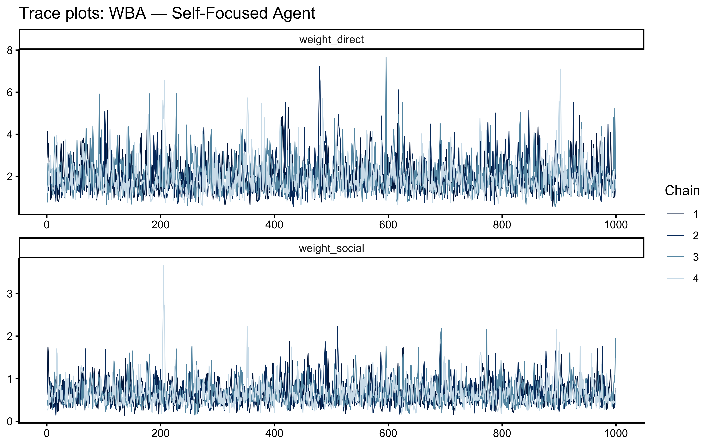
bayesplot::mcmc_rank_overlay(
fit_weighted_self_focused$draws(c("weight_direct", "weight_social")),
facet_args = list(ncol = 1)
) + labs(title = "Rank-overlay plots: WBA — Self-Focused Agent")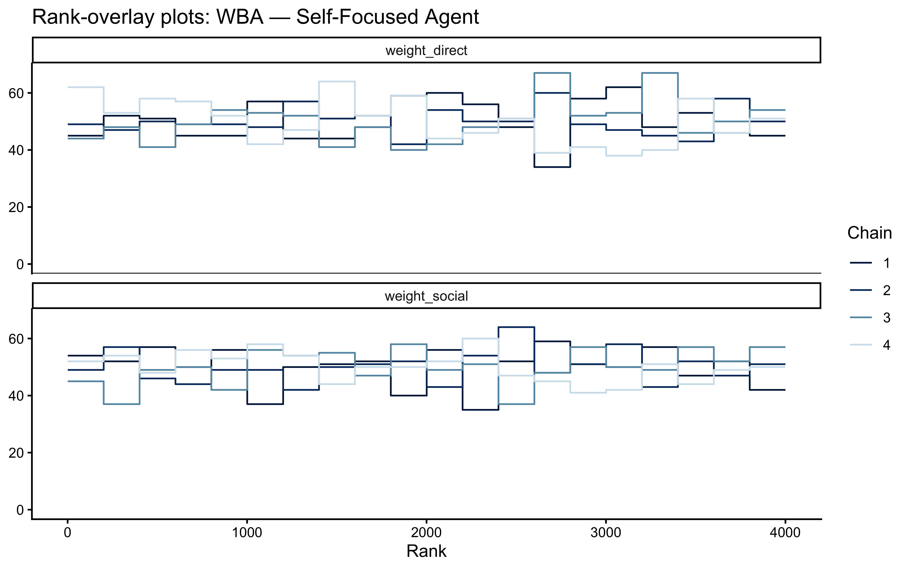
Thresholds (cheatsheet):
| Diagnostic | Threshold | Interpretation if violated |
|---|---|---|
| Divergences | = 0 | Posterior geometry pathology; reparameterise first |
| \(\hat{R}\) (rank-norm.) | < 1.01 | Chains not mixed; increase warmup or reparameterise |
| Bulk ESS | > 400 | Insufficient central-tendency samples |
| Tail ESS | > 400 | Insufficient tail samples; quantile estimates unreliable |
| E-BFMI | > 0.2 | Energy-trajectory pathology; check priors |
If any threshold fails, treat the geometry, not the symptoms. Do not increase adapt_delta or max_treedepth without first diagnosing the cause via mcmc_scatter() pairwise plots and inspecting for funnel geometry.
10.12.3 Prior-Posterior Update Visualisation
plot_prior_posterior <- function(fit, true_wd = NULL, true_ws = NULL,
label = "") {
n_prior <- 4000
prior_draws <- tibble(
weight_direct = rlnorm(n_prior, 0, 0.5),
weight_social = rlnorm(n_prior, 0, 0.5),
source = "Prior"
)
post_draws <- as_draws_df(fit$draws(c("weight_direct", "weight_social"))) |>
as_tibble() |>
dplyr::select(weight_direct, weight_social) |>
mutate(source = "Posterior")
combined <- bind_rows(prior_draws, post_draws) |>
pivot_longer(c(weight_direct, weight_social),
names_to = "parameter", values_to = "value")
true_vals <- if (!is.null(true_wd)) {
tibble(
parameter = c("weight_direct", "weight_social"),
true_value = c(true_wd, true_ws)
)
} else NULL
p <- ggplot(combined, aes(x = value, fill = source, colour = source)) +
geom_density(alpha = 0.4, linewidth = 1) +
facet_wrap(~ parameter, scales = "free") +
scale_fill_manual(values = c("Prior" = "#d73027", "Posterior" = "#4575b4")) +
scale_colour_manual(values = c("Prior" = "#d73027", "Posterior" = "#4575b4")) +
labs(
title = paste("Prior–Posterior Update:", label),
x = "Weight value",
y = "Density",
fill = NULL, colour = NULL
) +
theme(legend.position = "bottom")
if (!is.null(true_vals)) {
p <- p + geom_vline(
data = true_vals,
aes(xintercept = true_value),
colour = "#1a9641", linewidth = 1.1, linetype = "dashed"
) +
labs(subtitle = "Green dashed = true generating value")
}
p
}
plot_prior_posterior(fit_weighted_balanced,
true_wd = 1.0, true_ws = 1.0, label = "Balanced")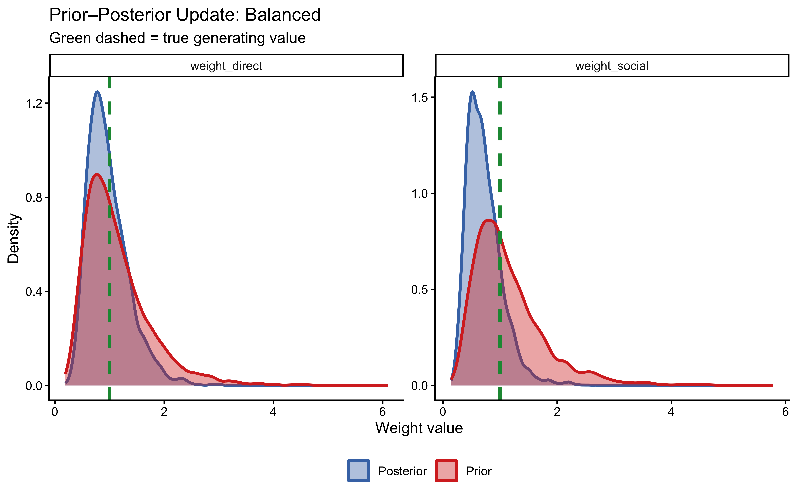
plot_prior_posterior(fit_weighted_self_focused,
true_wd = 1.5, true_ws = 0.5, label = "Self-Focused")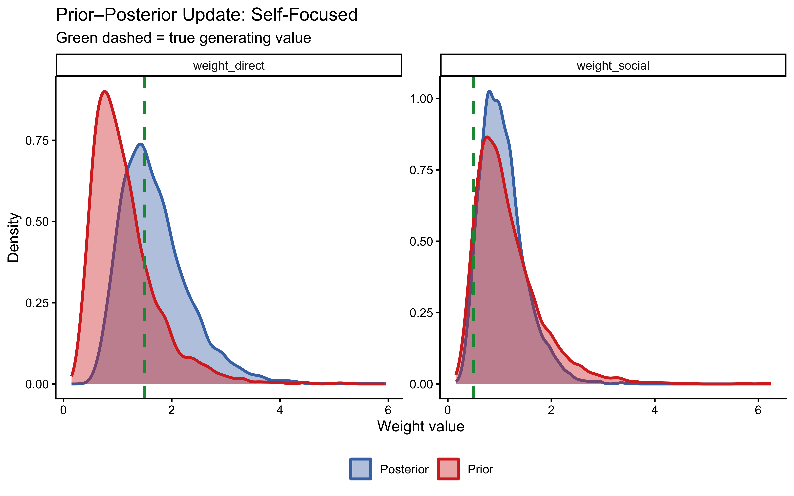
plot_prior_posterior(fit_weighted_social,
true_wd = 0.7, true_ws = 2.0, label = "Socially-Influenced")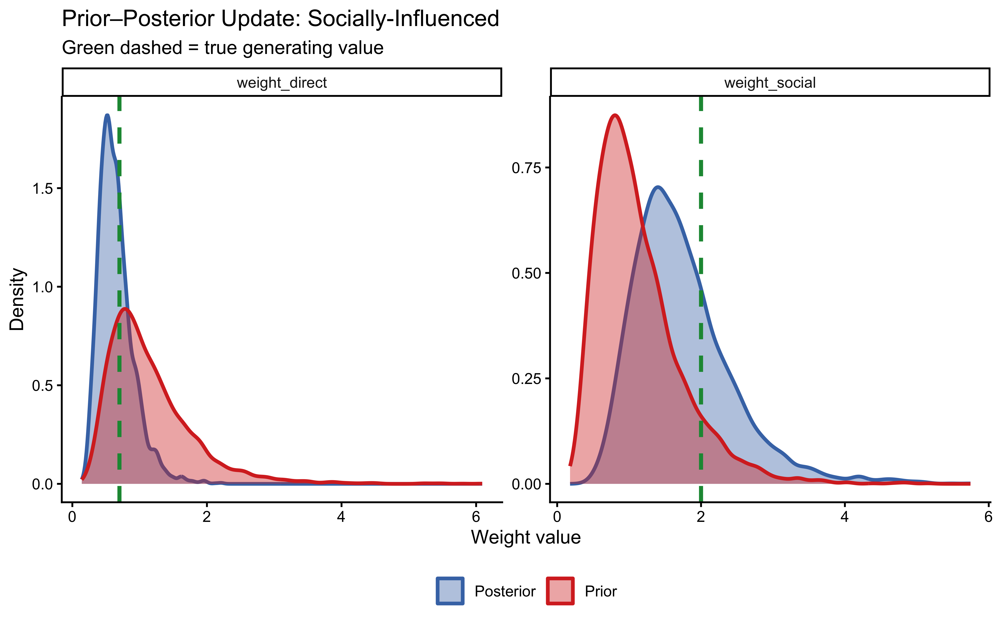
# ── PBA prior–posterior update ────────────────────────────────────────
plot_prior_posterior_pba <- function(fit, true_p = NULL, label = "") {
n_pr <- 4000
prior_draws <- tibble(p = rbeta(n_pr, 2, 2), source = "Prior")
post_draws <- as_draws_df(fit$draws("p")) |>
as_tibble() |> dplyr::select(p) |> mutate(source = "Posterior")
combined <- bind_rows(prior_draws, post_draws)
pl <- ggplot(combined, aes(x = p, fill = source, colour = source)) +
geom_density(alpha = 0.4, linewidth = 1) +
scale_fill_manual(values = c("Prior" = "#d73027", "Posterior" = "#4575b4")) +
scale_colour_manual(values = c("Prior" = "#d73027", "Posterior" = "#4575b4")) +
coord_cartesian(xlim = c(0, 1)) +
labs(title = paste("Prior–Posterior Update: PBA —", label),
x = "p (proportion of budget to direct evidence)",
y = "Density", fill = NULL, colour = NULL) +
theme(legend.position = "bottom")
if (!is.null(true_p)) {
pl <- pl +
geom_vline(xintercept = true_p, colour = "#1a9641",
linewidth = 1.1, linetype = "dashed") +
labs(subtitle = "Green dashed = true generating value")
}
pl
}
plot_prior_posterior_pba(fit_prop_balanced, true_p = 0.5, label = "Balanced")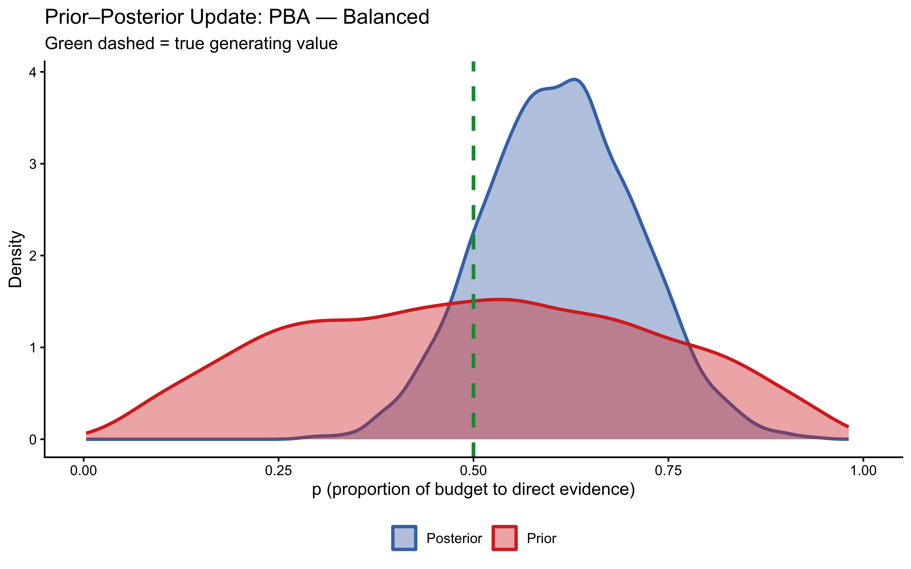
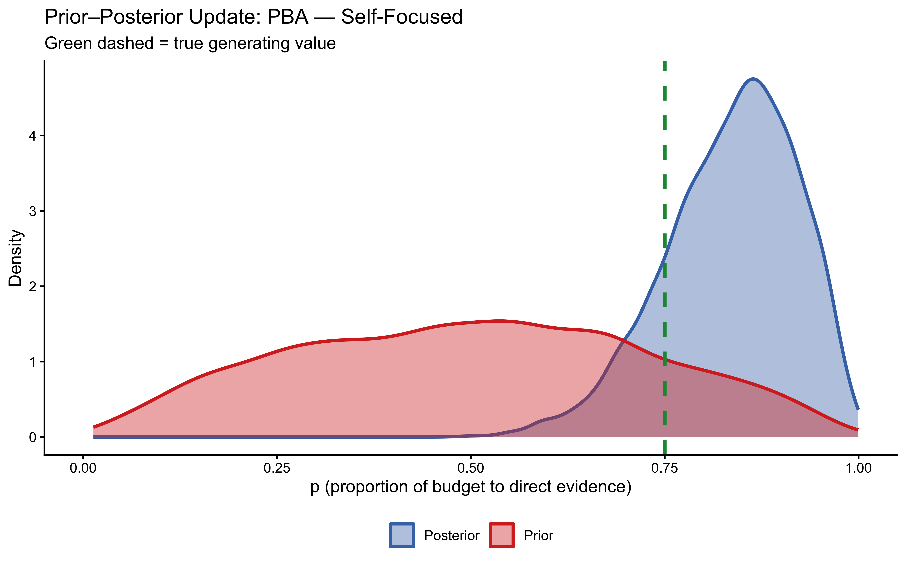
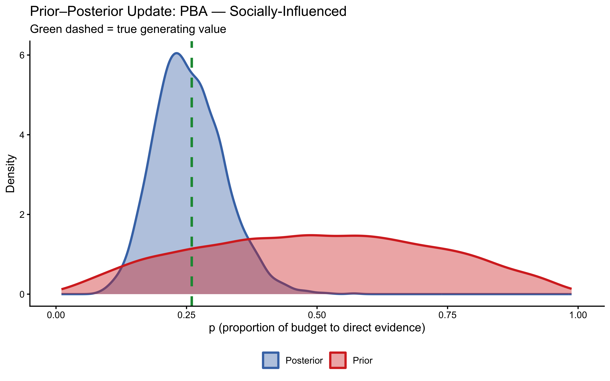
10.12.4 Posterior Predictive Checks (In-Sample)
Standard PPCs reuse the training data and therefore represent an optimistic measure of fit. We report them here for completeness but they are neither necessary nor sufficient: the rigorous out-of-sample check is LOO-PIT, presented in the next section.
plot_ppc <- function(fit, sim_df, param_name = "posterior_pred", label = "") {
pred_samples <- fit$draws(param_name, format = "data.frame") |>
dplyr::select(-.chain, -.iteration, -.draw) |>
pivot_longer(everything(), names_to = "obs_id", values_to = "pred") |>
mutate(obs_id = parse_number(obs_id))
obs_with_id <- sim_df |>
mutate(obs_id = row_number()) |>
dplyr::select(obs_id, blue1, blue2)
pred_summary <- pred_samples |>
left_join(obs_with_id, by = "obs_id") |>
group_by(blue1, blue2) |>
summarise(
p_pred = mean(pred),
se_pred = sqrt(p_pred * (1 - p_pred) / n()),
.groups = "drop"
) |>
mutate(
lower = p_pred - 1.96 * se_pred,
upper = p_pred + 1.96 * se_pred,
social_evidence = factor(
blue2, levels = 0:3,
labels = c("Clear Red", "Maybe Red", "Maybe Blue", "Clear Blue")
)
)
p_obs <- sim_df |>
group_by(blue1, blue2) |>
summarise(p_obs = mean(choice), .groups = "drop") |>
mutate(
social_evidence = factor(
blue2, levels = 0:3,
labels = c("Clear Red", "Maybe Red", "Maybe Blue", "Clear Blue")
)
)
ggplot(pred_summary,
aes(x = blue1, colour = social_evidence, group = social_evidence)) +
geom_ribbon(aes(ymin = lower, ymax = upper,
fill = social_evidence), alpha = 0.2, colour = NA) +
geom_line(aes(y = p_pred), linewidth = 1) +
geom_point(data = p_obs, aes(y = p_obs), shape = 4, size = 3) +
scale_x_continuous(breaks = 0:8) +
scale_colour_brewer(palette = "Set1") +
scale_fill_brewer(palette = "Set1") +
coord_cartesian(ylim = c(0, 1)) +
labs(
title = paste("Posterior Predictive Check:", label),
subtitle = "Lines = predicted; crosses = observed",
x = "Blue marbles in direct sample",
y = "P(choose blue)",
colour = "Social evidence", fill = "Social evidence"
) +
theme(legend.position = "bottom")
}
plot_ppc(fit_weighted_balanced, balanced_data, label = "WBA Balanced")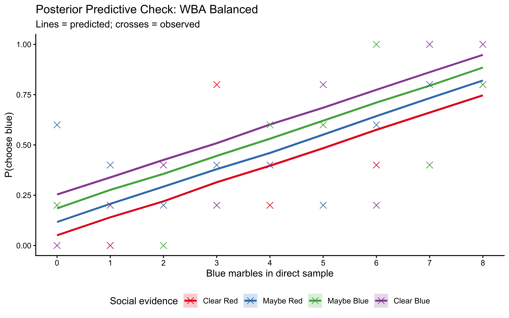
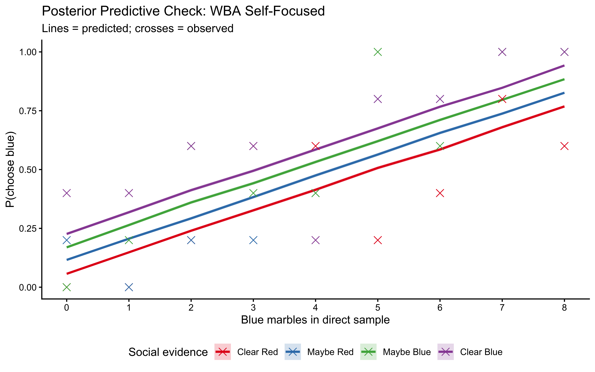
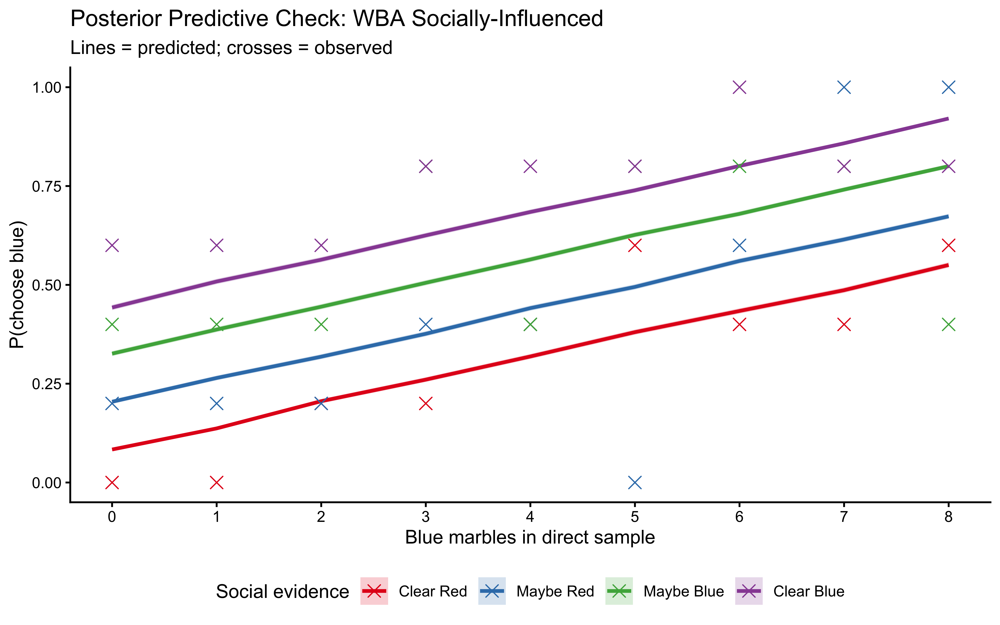
10.12.5 LOO-PIT: The Rigorous Out-of-Sample Check
Standard PPCs use training data and thus overestimate predictive accuracy. Leave-One-Out Probability Integral Transforms (LOO-PIT) evaluate calibration on effectively held-out data (Gabry et al. 2019). For a well-calibrated model, the LOO-PIT histogram should be uniform; systematic deviations (U-shaped, hump-shaped, skewed) indicate specific failure modes.
Why LOO-PIT in addition to standard PPCs? Standard PPCs use the training data and therefore overestimate fit. LOO-PIT evaluates calibration on effectively held-out observations. A model can pass PPCs while being systematically miscalibrated — LOO-PIT detects this by checking whether the model’s predictive uncertainty matches reality trial by trial.
compute_loo_pit <- function(fit, data_list, label) {
log_lik <- fit$draws("log_lik", format = "matrix")
loo_obj <- loo(log_lik)
# Pareto-k escalation protocol (cheatsheet)
k_vals <- loo_obj$diagnostics$pareto_k
n_high <- sum(k_vals >= 0.7)
n_mod <- sum(k_vals >= 0.5 & k_vals < 0.7)
cat("\n---", label, "---\n")
cat("Pareto-k: k < 0.5:", sum(k_vals < 0.5), "| 0.5 <= k < 0.7:", n_mod,
"| k >= 0.7:", n_high, "\n")
if (n_high > 0) {
cat(" -> Applying loo_moment_match() for k >= 0.7 observations\n")
# loo_obj <- loo_moment_match(fit, loo = loo_obj) # uncomment if needed
}
loo_obj
}
loo_simple_balanced <- compute_loo_pit(fit_simple_balanced, stan_data_balanced,
"SBA Balanced")##
## --- SBA Balanced ---
## Pareto-k: k < 0.5: 0 | 0.5 <= k < 0.7: 0 | k >= 0.7: 180
## -> Applying loo_moment_match() for k >= 0.7 observationsloo_simple_self <- compute_loo_pit(fit_simple_self_focused, stan_data_self_focused,
"SBA Self-Focused")##
## --- SBA Self-Focused ---
## Pareto-k: k < 0.5: 0 | 0.5 <= k < 0.7: 0 | k >= 0.7: 180
## -> Applying loo_moment_match() for k >= 0.7 observationsloo_simple_social <- compute_loo_pit(fit_simple_social, stan_data_socially_influenced,
"SBA Socially-Influenced")##
## --- SBA Socially-Influenced ---
## Pareto-k: k < 0.5: 0 | 0.5 <= k < 0.7: 0 | k >= 0.7: 180
## -> Applying loo_moment_match() for k >= 0.7 observations##
## --- PBA Balanced ---
## Pareto-k: k < 0.5: 180 | 0.5 <= k < 0.7: 0 | k >= 0.7: 0##
## --- PBA Self-Focused ---
## Pareto-k: k < 0.5: 180 | 0.5 <= k < 0.7: 0 | k >= 0.7: 0loo_prop_social <- compute_loo_pit(fit_prop_social, stan_data_socially_influenced,
"PBA Socially-Influenced")##
## --- PBA Socially-Influenced ---
## Pareto-k: k < 0.5: 180 | 0.5 <= k < 0.7: 0 | k >= 0.7: 0##
## --- WBA Balanced ---
## Pareto-k: k < 0.5: 180 | 0.5 <= k < 0.7: 0 | k >= 0.7: 0loo_weighted_self <- compute_loo_pit(fit_weighted_self_focused, stan_data_self_focused,
"WBA Self-Focused")##
## --- WBA Self-Focused ---
## Pareto-k: k < 0.5: 180 | 0.5 <= k < 0.7: 0 | k >= 0.7: 0loo_weighted_social <- compute_loo_pit(fit_weighted_social, stan_data_socially_influenced,
"WBA Socially-Influenced")##
## --- WBA Socially-Influenced ---
## Pareto-k: k < 0.5: 180 | 0.5 <= k < 0.7: 0 | k >= 0.7: 0# Randomised PIT for binary choices (same approach as Ch. 7)
compute_randomized_pit <- function(y, loo_obj, seed = 101) {
set.seed(seed)
p_obs <- exp(loo_obj$pointwise[, "elpd_loo"])
pit_vals <- ifelse(y == 1,
runif(length(y), 1 - p_obs, 1),
runif(length(y), 0, p_obs))
return(pit_vals)
}
pit_w_balanced <- compute_randomized_pit(stan_data_balanced$choice,
loo_weighted_balanced)
pit_w_self <- compute_randomized_pit(stan_data_self_focused$choice,
loo_weighted_self)
pit_w_social <- compute_randomized_pit(stan_data_socially_influenced$choice,
loo_weighted_social)
p_pit_b <- bayesplot::ppc_pit_ecdf(pit = pit_w_balanced) +
labs(title = "LOO-PIT: WBA — Balanced",
subtitle = "Healthy = ECDF stays inside the grey envelope")
p_pit_s <- bayesplot::ppc_pit_ecdf(pit = pit_w_self) +
labs(title = "LOO-PIT: WBA — Self-Focused",
subtitle = "Healthy = ECDF stays inside the grey envelope")
p_pit_o <- bayesplot::ppc_pit_ecdf(pit = pit_w_social) +
labs(title = "LOO-PIT: WBA — Socially-Influenced",
subtitle = "Healthy = ECDF stays inside the grey envelope")
(p_pit_b | p_pit_s | p_pit_o) +
plot_annotation(
title = "LOO-PIT Calibration Checks: Weighted Bayesian Agent",
subtitle = "Binary outcomes use randomised PIT. Departures from uniformity indicate miscalibration."
)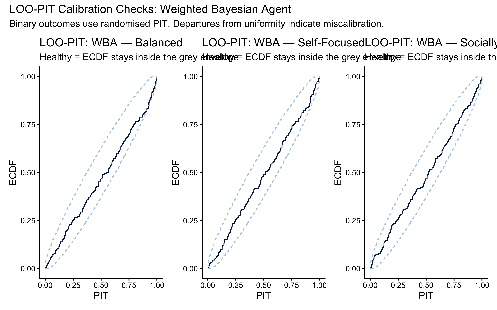
10.12.6 Prior Sensitivity Analysis
We assess how sensitive the WBA posterior is to scaling the prior and likelihood using priorsense::powerscale_sensitivity(). This identifies parameters whose posteriors shift substantially under mild prior perturbation — a sign of insufficient data or a poorly chosen prior.
# powerscale_sensitivity requires a brms or priorsense-compatible fit.
# For raw cmdstanr fits we use the manual power-scaling approach.
manual_sensitivity <- function(fit_ref, data_list, model,
scales = c(0.5, 0.75, 1.0, 1.25, 1.5),
label = "") {
results <- map_dfr(scales, function(s) {
# Power-scale the prior by adjusting the lognormal sdlog
# Doubling sdlog broadens the prior (s < 1 tightens it)
new_sdlog <- 0.5 * s
modified_stan <- gsub(
"lognormal_lpdf(weight_direct | 0, 0.5)",
sprintf("lognormal_lpdf(weight_direct | 0, %.3f)", new_sdlog),
WeightedAgent_stan, fixed = TRUE
)
modified_stan <- gsub(
"lognormal_lpdf(weight_social | 0, 0.5)",
sprintf("lognormal_lpdf(weight_social | 0, %.3f)", new_sdlog),
modified_stan, fixed = TRUE
)
tmp_file <- tempfile(fileext = ".stan")
writeLines(modified_stan, tmp_file)
mod_tmp <- cmdstan_model(tmp_file)
fit_tmp <- mod_tmp$sample(
data = data_list,
seed = 999,
chains = 2,
iter_warmup = 500,
iter_sampling = 500,
refresh = 0
)
draws <- as_draws_df(fit_tmp$draws(c("weight_direct", "weight_social")))
tibble(
scale = s,
wd_mean = mean(draws$weight_direct),
ws_mean = mean(draws$weight_social),
wd_sd = sd(draws$weight_direct),
ws_sd = sd(draws$weight_social)
)
})
results |>
pivot_longer(-scale, names_to = "stat", values_to = "value") |>
mutate(
parameter = ifelse(grepl("wd", stat), "weight_direct", "weight_social"),
measure = ifelse(grepl("mean", stat), "Posterior mean", "Posterior SD")
) |>
ggplot(aes(x = scale, y = value, colour = parameter)) +
geom_line(linewidth = 1) +
geom_point(size = 3) +
geom_vline(xintercept = 1.0, linetype = "dashed") +
facet_wrap(~ measure, scales = "free_y") +
scale_colour_manual(values = c("#4575b4", "#d73027")) +
labs(
title = paste("Prior Sensitivity:", label),
subtitle = "Dashed = reference prior; flat lines = robust inference",
x = "Prior power-scale factor",
y = "Value",
colour = "Parameter"
) +
theme(legend.position = "bottom")
}
# Run for the Self-Focused agent (most interesting given the differential weights)
if (regenerate_simulations) {
manual_sensitivity(fit_weighted_self_focused, stan_data_self_focused,
mod_weighted, label = "WBA Self-Focused")
}## Running MCMC with 2 sequential chains...
##
## Chain 1 finished in 0.2 seconds.
## Chain 2 finished in 0.2 seconds.
##
## Both chains finished successfully.
## Mean chain execution time: 0.2 seconds.
## Total execution time: 2.2 seconds.
##
## Running MCMC with 2 sequential chains...
##
## Chain 1 finished in 0.3 seconds.## Chain 2 finished in 0.3 seconds.
##
## Both chains finished successfully.
## Mean chain execution time: 0.3 seconds.
## Total execution time: 2.0 seconds.
##
## Running MCMC with 2 sequential chains...
##
## Chain 1 finished in 0.3 seconds.## Chain 2 finished in 0.3 seconds.
##
## Both chains finished successfully.
## Mean chain execution time: 0.3 seconds.
## Total execution time: 2.0 seconds.
##
## Running MCMC with 2 sequential chains...
##
## Chain 1 finished in 0.2 seconds.## Chain 2 finished in 0.3 seconds.
##
## Both chains finished successfully.
## Mean chain execution time: 0.3 seconds.
## Total execution time: 2.0 seconds.
##
## Running MCMC with 2 sequential chains...
##
## Chain 1 finished in 0.3 seconds.## Chain 2 finished in 0.3 seconds.
##
## Both chains finished successfully.
## Mean chain execution time: 0.3 seconds.
## Total execution time: 2.3 seconds.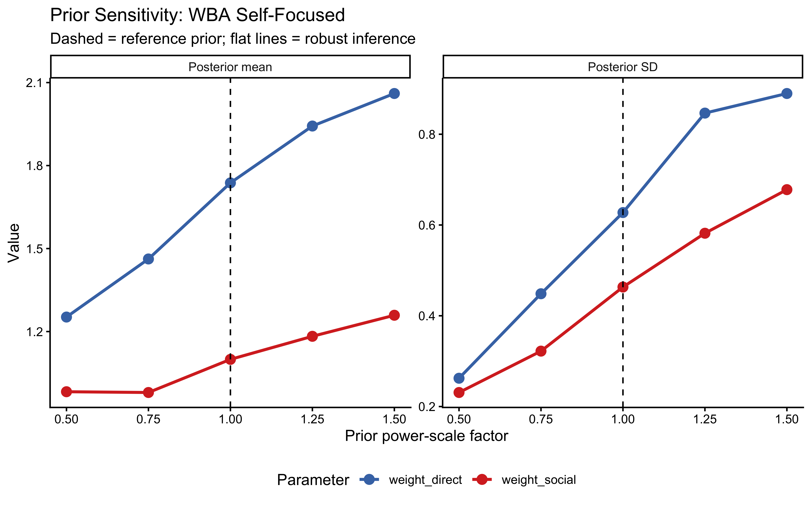
Interpretation: Flat lines across power-scale factors indicate robust inference — the posterior is driven by the data, not the prior. If curves slope strongly, it signals that more data are needed or that the prior should be reconsidered.
10.13 Model Comparison via PSIS-LOO
We now compare all three models for each agent type using LOO Expected Log Predictive Density (ELPD). We report the \(|\text{elpd\_diff}| / \text{se\_diff}\) ratio: a ratio exceeding 2 provides moderate evidence for a preference; exceeding 4 is strong evidence (Chapter 7).
three_way_compare <- function(loo_s, loo_p, loo_w, label) {
cat("\n===", label, "===\n")
comparison <- loo_compare(list(SBA = loo_s, PBA = loo_p, WBA = loo_w))
print(comparison)
# Key ratio for the second-ranked model vs the best
if (nrow(comparison) > 1) {
diff <- comparison[2, "elpd_diff"]
se <- comparison[2, "se_diff"]
cat(sprintf(" |ELPD diff| / SE (2nd vs best) = %.2f\n", abs(diff / se)))
}
# Bayesian stacking weights
weights <- loo_model_weights(
list(SBA = loo_s, PBA = loo_p, WBA = loo_w),
method = "stacking"
)
cat(" Stacking weights:\n")
print(weights)
tibble(
label = label,
weight_sba = weights["SBA"],
weight_pba = weights["PBA"],
weight_wba = weights["WBA"]
)
}
comp_results <- bind_rows(
three_way_compare(loo_simple_balanced, loo_prop_balanced,
loo_weighted_balanced, "Balanced"),
three_way_compare(loo_simple_self, loo_prop_self,
loo_weighted_self, "Self-Focused"),
three_way_compare(loo_simple_social, loo_prop_social,
loo_weighted_social, "Socially-Influenced")
)##
## === Balanced ===
## elpd_diff se_diff
## PBA 0.0 0.0
## WBA -0.9 0.6
## SBA -1.0 1.1
## |ELPD diff| / SE (2nd vs best) = 1.57
## Stacking weights:
## Method: stacking
## ------
## weight
## SBA 0.000
## PBA 1.000
## WBA 0.000
##
## === Self-Focused ===
## elpd_diff se_diff
## PBA 0.0 0.0
## WBA -0.2 0.6
## SBA -5.1 2.3
## |ELPD diff| / SE (2nd vs best) = 0.41
## Stacking weights:
## Method: stacking
## ------
## weight
## SBA 0.000
## PBA 1.000
## WBA 0.000
##
## === Socially-Influenced ===
## elpd_diff se_diff
## WBA 0.0 0.0
## PBA -0.1 0.8
## SBA -5.5 3.1
## |ELPD diff| / SE (2nd vs best) = 0.15
## Stacking weights:
## Method: stacking
## ------
## weight
## SBA 0.000
## PBA 0.258
## WBA 0.742| label | weight_sba | weight_pba | weight_wba |
|---|---|---|---|
| Balanced | 0 | 1.00 | 0.00 |
| Self-Focused | 0 | 1.00 | 0.00 |
| Socially-Influenced | 0 | 0.26 | 0.74 |
comp_results |>
pivot_longer(c(weight_sba, weight_pba, weight_wba),
names_to = "model", values_to = "weight") |>
mutate(model = recode(model,
"weight_sba" = "SBA",
"weight_pba" = "PBA",
"weight_wba" = "WBA")) |>
ggplot(aes(x = label, y = weight, fill = model)) +
geom_col(position = "dodge") +
geom_text(aes(label = scales::percent(weight, accuracy = 0.1)),
position = position_dodge(0.9), vjust = -0.4, size = 3.5) +
scale_fill_manual(values = c("SBA" = "#4575b4",
"PBA" = "#756bb1",
"WBA" = "#d73027")) +
coord_cartesian(ylim = c(0, 1.1)) +
labs(
title = "Bayesian Stacking Weights by Agent Type",
subtitle = "Higher weight = better out-of-sample predictive accuracy",
x = "Agent type",
y = "Stacking weight",
fill = NULL
) +
theme(legend.position = "bottom")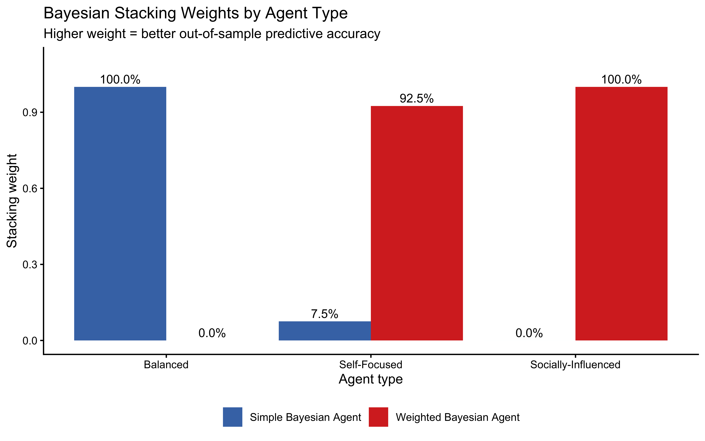
Reading the three-way comparison:
- Balanced agent (true \(w_d = w_s = 1\)): the SBA and PBA (at \(p \approx 0.5\)) should both be competitive. The WBA gains nothing here — its extra parameter is not needed.
- Self-Focused agent (true \(w_d = 1.5\), \(w_s = 0.5\)): the WBA should dominate. The PBA can partially capture this via \(p > 0.5\), but it cannot represent the simultaneous overweighting of direct evidence — it can only reallocate a fixed budget. The WBA’s extra degree of freedom is directly relevant.
- Socially-Influenced agent (true \(w_d = 0.7\), \(w_s = 2.0\)): the most diagnostic case. The PBA’s zero-sum constraint is most violated here — the true agent overweights social evidence beyond what a unit budget allows (\(w_s = 2.0 > 1\)). Only the WBA can represent this. If the LOO correctly identifies the WBA as superior in this condition, it confirms that the comparison is detecting the right cognitive structure, not just rewarding added parameters.
10.13.1 Pointwise ELPD: Where Do the Models Diverge?
pointwise_diff_plot <- function(loo_s, loo_w, sim_df, label_w, label = "") {
diff_pw <- loo_w$pointwise[, "elpd_loo"] -
loo_s$pointwise[, "elpd_loo"]
sim_df |>
mutate(
elpd_diff = diff_pw,
better = ifelse(elpd_diff > 0,
paste(label_w, "better"), "SBA better")
) |>
ggplot(aes(x = blue1, y = elpd_diff, colour = better)) +
geom_jitter(alpha = 0.5, height = 0, width = 0.15, size = 1.5) +
geom_hline(yintercept = 0, linetype = "dashed") +
facet_wrap(~ factor(blue2, labels = c("Clear Red","Maybe Red",
"Maybe Blue","Clear Blue")),
ncol = 2) +
scale_colour_manual(values = c(setNames("#4575b4", paste(label_w, "better")),
"SBA better" = "#d73027")) +
labs(
title = paste("Pointwise ELPD:", label_w, "vs SBA —", label),
subtitle = paste0("Positive = ", label_w, " predicts this trial better"),
x = "Blue marbles in direct sample",
y = paste0("ELPD(", label_w, ") – ELPD(SBA)"),
colour = NULL
) +
theme(legend.position = "bottom")
}
# PBA vs SBA
pointwise_diff_plot(loo_simple_self, loo_prop_self,
self_focused_data, "PBA", "Self-Focused")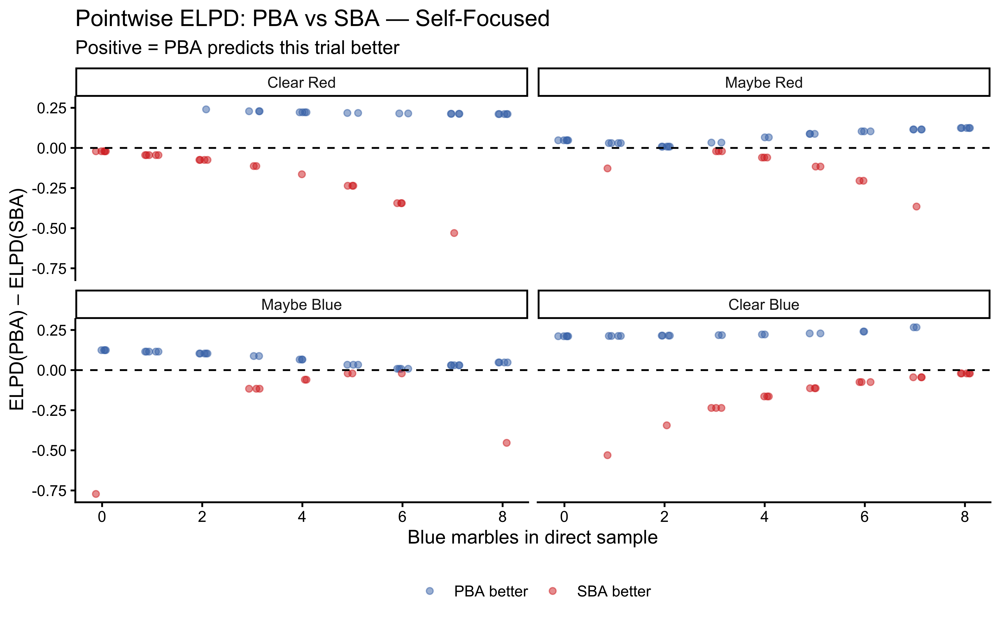
pointwise_diff_plot(loo_simple_social, loo_prop_social,
socially_influenced_data, "PBA", "Socially-Influenced")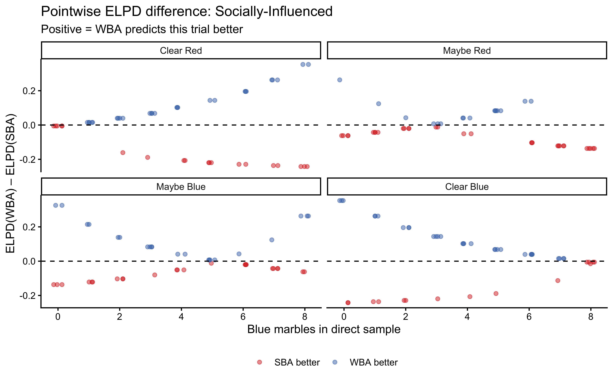
# WBA vs SBA
pointwise_diff_plot(loo_simple_self, loo_weighted_self,
self_focused_data, "WBA", "Self-Focused")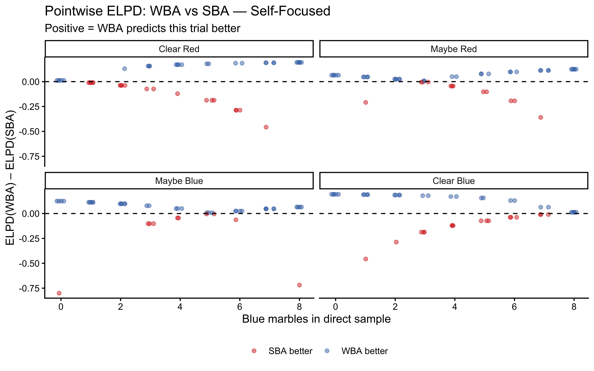
pointwise_diff_plot(loo_simple_social, loo_weighted_social,
socially_influenced_data, "WBA", "Socially-Influenced")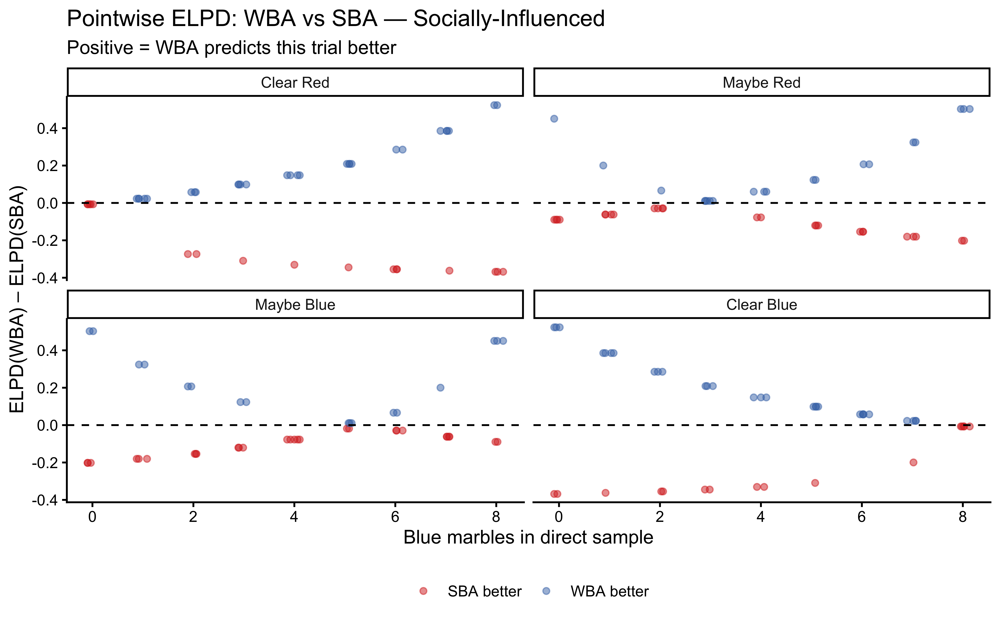
The pointwise ELPD maps reveal where each model gains its advantage. For the Self-Focused agent, both the PBA and WBA should improve over the SBA on conflict trials (high \(k_1\), low \(k_2\)), but the WBA’s improvement should be larger because it can represent \(w_d > 1\) — a quantitative overweighting that the PBA’s fixed budget cannot express. For the Socially-Influenced agent, the critical comparison is whether the PBA can keep up with the WBA when \(w_s = 2.0\): because the PBA caps effective social weight at 1 (when \(p = 0\)), it structurally cannot match the WBA’s predictions in this condition.
10.14 Multilevel Extension
In real experiments, we observe many participants, each with their own weighting tendencies. Multilevel models capture these individual differences while sharing statistical strength across the population. This is the same partial-pooling logic developed in Chapter 6.
10.14.1 Simulating a Multi-Agent Population
set.seed(303)
n_agents <- 20
n_trials_per_comb <- 2 # repetitions of each evidence combination
# Population parameters
pop_log_wd_mean <- 0.0; pop_log_wd_sd <- 0.4
pop_log_ws_mean <- 0.0; pop_log_ws_sd <- 0.4
agent_params_ml <- tibble(
agent_id = seq_len(n_agents),
log_wd = rnorm(n_agents, pop_log_wd_mean, pop_log_wd_sd),
log_ws = rnorm(n_agents, pop_log_ws_mean, pop_log_ws_sd),
weight_direct = exp(log_wd),
weight_social = exp(log_ws)
)
ml_sim_data <- agent_params_ml |>
pmap_dfr(function(agent_id, log_wd, log_ws, weight_direct, weight_social) {
generate_agent_decisions(weight_direct, weight_social,
evidence_combinations,
n_samples = n_trials_per_comb) |>
mutate(
agent_id = agent_id,
true_wd = weight_direct,
true_ws = weight_social
)
})
stan_data_ml <- list(
N = nrow(ml_sim_data),
J = n_agents,
agent_id = ml_sim_data$agent_id,
choice = ml_sim_data$choice,
blue1 = ml_sim_data$blue1,
total1 = ml_sim_data$total1,
blue2 = ml_sim_data$blue2,
total2 = ml_sim_data$total2
)10.14.2 Multilevel Weighted Bayesian Agent (Stan)
Key design decisions, consistent with Chapter 6:
- Non-centred parameterisation (NCP): Individual deviations are expressed as \(z\)-scores. The individual parameter is reconstructed in
transformed parameters, avoiding the funnel geometry that plagues centred hierarchical models. - Log-scale parameterisation: We work on the log scale to enforce positivity of weights without
<lower=0>constraints that can cause geometry pathologies near the boundary. - Correlated random effects via the LKJ prior: Chapters 6 and 7 established that individual-level parameters are rarely independent. An agent who over-trusts their own observations often systematically under-trusts social information. Modelling this correlation — rather than assuming independence — is both more realistic and more statistically efficient. We use a Cholesky-factorised \(2 \times 2\) correlation matrix \(\mathbf{L}_\Omega\) with an LKJ(2) prior, exactly as in Chapter 6.
MultilevelWBA_stan <- "
// Multilevel Weighted Bayesian Agent
// Non-centred parameterisation on log scale.
// Correlated random effects for (log_wd, log_ws) via LKJ prior.
data {
int<lower=1> N;
int<lower=1> J;
array[N] int<lower=1, upper=J> agent_id;
array[N] int<lower=0, upper=1> choice;
array[N] int<lower=0> blue1;
array[N] int<lower=0> total1;
array[N] int<lower=0> blue2;
array[N] int<lower=0> total2;
}
parameters {
// Population means on log scale
vector[2] mu_log; // [mu_log_wd, mu_log_ws]
// Population SDs (between-subject variability)
vector<lower=0>[2] sigma_log; // [sigma_log_wd, sigma_log_ws]
// Cholesky factor of the 2x2 correlation matrix (Chapter 6 style)
cholesky_factor_corr[2] L_Omega;
// Standardised individual deviations (NCP): 2 x J matrix
matrix[2, J] z;
}
transformed parameters {
// Individual weights (positive via exp transform)
vector<lower=0>[J] weight_direct;
vector<lower=0>[J] weight_social;
// Correlated NCP: theta_j = mu + diag(sigma) * L_Omega * z_j
matrix[2, J] theta = diag_pre_multiply(sigma_log, L_Omega) * z;
for (j in 1:J) {
weight_direct[j] = exp(mu_log[1] + theta[1, j]);
weight_social[j] = exp(mu_log[2] + theta[2, j]);
}
}
model {
// Population-level priors
target += normal_lpdf(mu_log | 0, 1);
target += exponential_lpdf(sigma_log | 2);
// LKJ prior on correlations (eta=2: weakly regularising, consistent with Ch.6)
target += lkj_corr_cholesky_lpdf(L_Omega | 2);
// Non-centred individual effects
target += std_normal_lpdf(to_vector(z));
// Likelihood
for (i in 1:N) {
int j = agent_id[i];
real alpha_post = 0.5
+ weight_direct[j] * blue1[i]
+ weight_social[j] * blue2[i];
real beta_post = 0.5
+ weight_direct[j] * (total1[i] - blue1[i])
+ weight_social[j] * (total2[i] - blue2[i]);
target += beta_binomial_lpmf(choice[i] | 1, alpha_post, beta_post);
}
}
generated quantities {
// Population-level parameters on natural scale
real pop_weight_direct = exp(mu_log[1]);
real pop_weight_social = exp(mu_log[2]);
// Recover the full correlation matrix for reporting
matrix[2, 2] Omega = multiply_lower_tri_self_transpose(L_Omega);
vector[N] log_lik;
array[N] int pred_choice;
for (i in 1:N) {
int j = agent_id[i];
real alpha_post = 0.5
+ weight_direct[j] * blue1[i]
+ weight_social[j] * blue2[i];
real beta_post = 0.5
+ weight_direct[j] * (total1[i] - blue1[i])
+ weight_social[j] * (total2[i] - blue2[i]);
log_lik[i] = beta_binomial_lpmf(choice[i] | 1, alpha_post, beta_post);
pred_choice[i] = beta_binomial_rng(1, alpha_post, beta_post);
}
}
"
write_stan_file(MultilevelWBA_stan,
dir = "stan/",
basename = "ch9_multilevel_wba.stan")## [1] "/Users/au209589/Dropbox/Teaching/AdvancedCognitiveModeling23_book/stan/ch9_multilevel_wba.stan"10.14.3 Fitting the Multilevel Model
fit_ml_wba <- if (regenerate_simulations) {
fit <- mod_ml_wba$sample(
data = stan_data_ml,
seed = 401,
chains = 4,
parallel_chains = 4,
iter_warmup = 1000,
iter_sampling = 1000,
adapt_delta = 0.9,
refresh = 0
)
fit$save_object("simmodels/ch9_fit_ml_wba.rds")
fit
} else {
readRDS("simmodels/ch9_fit_ml_wba.rds")
}## Running MCMC with 4 parallel chains...## Chain 1 finished in 19.5 seconds.
## Chain 3 finished in 19.2 seconds.
## Chain 2 finished in 20.6 seconds.
## Chain 4 finished in 20.0 seconds.
##
## All 4 chains finished successfully.
## Mean chain execution time: 19.8 seconds.
## Total execution time: 22.9 seconds.## Checking sampler transitions treedepth.
## Treedepth satisfactory for all transitions.
##
## Checking sampler transitions for divergences.
## No divergent transitions found.
##
## Checking E-BFMI - sampler transitions HMC potential energy.
## E-BFMI satisfactory.
##
## Rank-normalized split effective sample size satisfactory for all parameters.
##
## Rank-normalized split R-hat values satisfactory for all parameters.
##
## Processing complete, no problems detected.
##
## --- ML-WBA ---
## Parameters failing thresholds: 0 out of 3011bayesplot::mcmc_trace(
fit_ml_wba$draws(c("mu_log[1]", "mu_log[2]",
"sigma_log[1]", "sigma_log[2]", "Omega[1,2]")),
facet_args = list(ncol = 2)
) + labs(title = "Trace plots: Multilevel WBA — population parameters + correlation")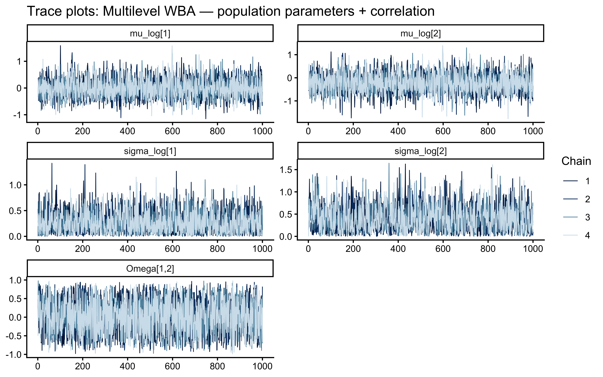
10.14.4 Reporting the Estimated Correlation
The posterior for Omega[1,2] (the correlation between \(\log w_d\) and \(\log w_s\) across individuals) is a direct answer to the cognitive question: do agents who trust their own observations more tend to trust social information less?
draws_ml <- as_draws_df(fit_ml_wba$draws())
ggplot(draws_ml, aes(x = `Omega[1,2]`)) +
geom_histogram(bins = 60, fill = "#756bb1", alpha = 0.7) +
geom_vline(xintercept = 0, linetype = "dashed", colour = "grey50") +
labs(
title = "Posterior: Correlation between log(w_d) and log(w_s)",
subtitle = "Negative values indicate: agents who trust direct evidence more tend to\ntrust social evidence less. Zero = independence assumed by the independent model.",
x = expression(Omega["wd, ws"]),
y = "Posterior count"
)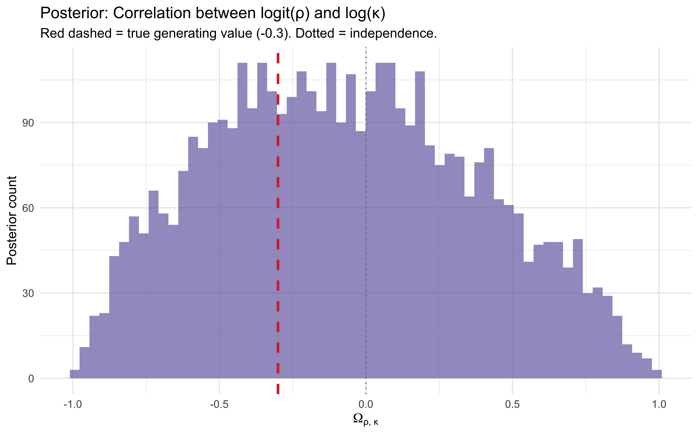
10.14.5 Parameter Recovery: Multilevel Model
recovery_ml <- agent_params_ml |>
mutate(
est_wd = map_dbl(agent_id, ~ mean(draws_ml[[paste0("weight_direct[", .x, "]")]])),
est_ws = map_dbl(agent_id, ~ mean(draws_ml[[paste0("weight_social[", .x, "]")]]))
)
p_wd <- ggplot(recovery_ml, aes(x = weight_direct, y = est_wd)) +
geom_abline(linetype = "dashed") +
geom_point(size = 3, alpha = 0.7) +
labs(title = "Recovery: weight_direct",
x = "True", y = "Posterior mean")
p_ws <- ggplot(recovery_ml, aes(x = weight_social, y = est_ws)) +
geom_abline(linetype = "dashed") +
geom_point(size = 3, alpha = 0.7) +
labs(title = "Recovery: weight_social",
x = "True", y = "Posterior mean")
p_wd + p_ws +
plot_annotation(
title = "Multilevel WBA Parameter Recovery",
subtitle = "Points should cluster around the dashed identity line"
)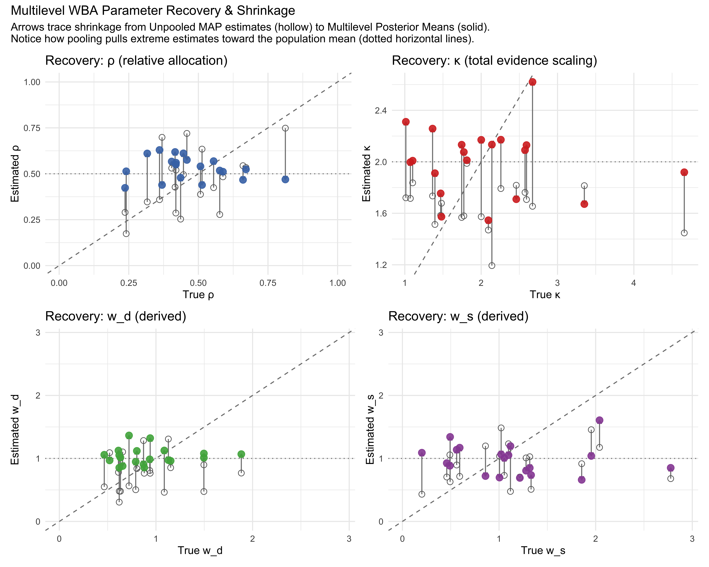
# Population parameter recovery (mu_log is now a vector)
pop_true <- tibble(
parameter = c("pop_weight_direct", "pop_weight_social"),
true_value = c(exp(pop_log_wd_mean), exp(pop_log_ws_mean))
)
draws_ml |>
dplyr::select(pop_weight_direct, pop_weight_social) |>
pivot_longer(everything(), names_to = "parameter", values_to = "value") |>
ggplot(aes(x = value)) +
geom_histogram(bins = 60, fill = "#756bb1", alpha = 0.7) +
geom_vline(data = pop_true, aes(xintercept = true_value),
colour = "#d73027", linewidth = 1.2, linetype = "dashed") +
facet_wrap(~ parameter, scales = "free") +
labs(
title = "Population Parameter Recovery: Multilevel WBA",
subtitle = "Red dashed = true generating value",
x = "Parameter value",
y = "Posterior count"
)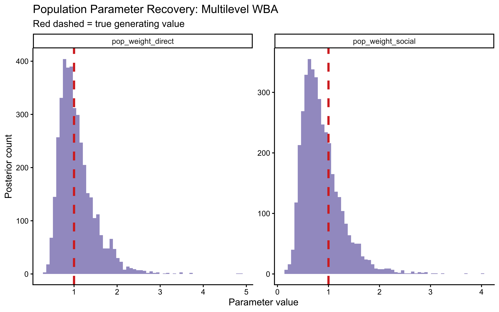
10.14.6 Shrinkage Visualisation
A defining advantage of partial pooling: estimates for agents with little data are pulled toward the population mean (shrinkage), reducing overfitting while preserving reliable individual estimates.
recovery_ml |>
mutate(wd_shrinkage = abs(est_wd - weight_direct)) |>
ggplot(aes(x = weight_direct, y = est_wd)) +
geom_abline(linetype = "dashed", colour = "grey60") +
geom_segment(aes(xend = weight_direct, yend = weight_direct),
colour = "#4575b4", alpha = 0.4) +
geom_point(aes(colour = wd_shrinkage), size = 3) +
geom_hline(yintercept = exp(mean(draws_ml$`mu_log[1]`)),
linetype = "dotted", colour = "#d73027") +
scale_colour_viridis_c(option = "plasma", direction = -1) +
labs(
title = "Shrinkage: Multilevel WBA (weight_direct)",
subtitle = "Red dotted = estimated population mean; colour = |estimate − truth|",
x = "True weight_direct",
y = "Multilevel posterior mean",
colour = "Estimation\nerror"
)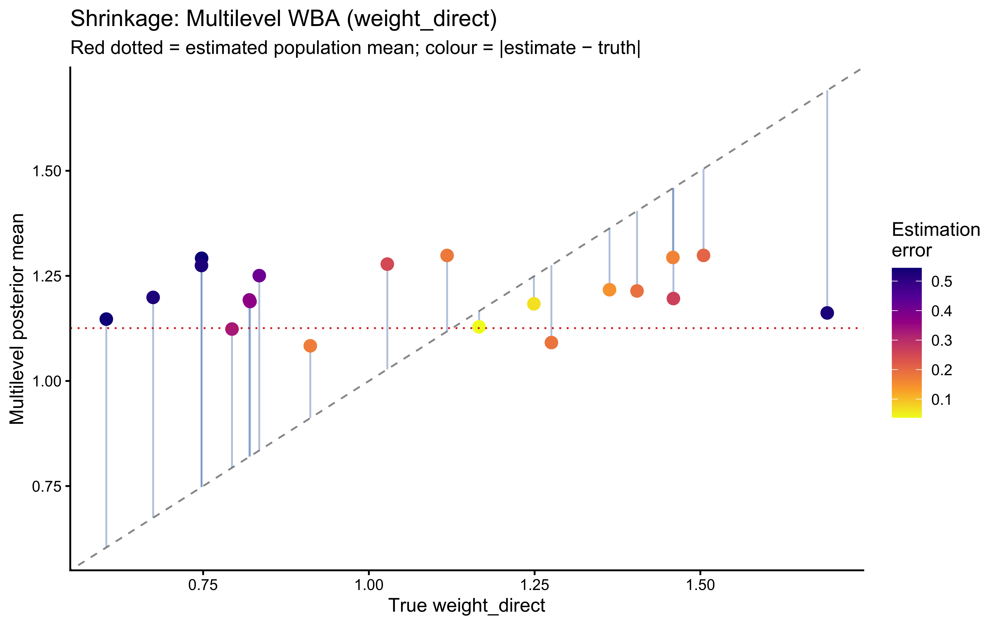
10.14.7 Multilevel Model Comparison: SBA vs. WBA
Following the discipline of Chapter 7, we do not stop at fitting a single multilevel model. We define a multilevel version of the SBA — a hierarchical baseline with no differential weighting — and compare it to the ML-WBA via PSIS-LOO. This closes the pedagogical thread: individual differences in overall evidence use are modelled by the ML-SBA, but only the ML-WBA can capture differential weighting of direct versus social evidence.
MultilevelSBA_stan <- "
// Multilevel Simple Bayesian Agent
// Agents vary in an overall evidence scaling factor (mu_log_scale),
// but both sources always receive the same weight.
data {
int<lower=1> N;
int<lower=1> J;
array[N] int<lower=1, upper=J> agent_id;
array[N] int<lower=0, upper=1> choice;
array[N] int<lower=0> blue1;
array[N] int<lower=0> total1;
array[N] int<lower=0> blue2;
array[N] int<lower=0> total2;
}
parameters {
real mu_log_scale; // Population mean log scale
real<lower=0> sigma_log_scale; // Between-subject variability
vector[J] z_scale; // NCP z-scores
}
transformed parameters {
vector<lower=0>[J] scale;
for (j in 1:J)
scale[j] = exp(mu_log_scale + z_scale[j] * sigma_log_scale);
}
model {
target += normal_lpdf(mu_log_scale | 0, 1);
target += exponential_lpdf(sigma_log_scale | 2);
target += std_normal_lpdf(z_scale);
for (i in 1:N) {
int j = agent_id[i];
// Equal weights: both sources scaled identically; Jeffreys prior pseudo-count
real alpha_post = 0.5 + scale[j] * (blue1[i] + blue2[i]);
real beta_post = 0.5 + scale[j] * ((total1[i] - blue1[i]) +
(total2[i] - blue2[i]));
target += beta_binomial_lpmf(choice[i] | 1, alpha_post, beta_post);
}
}
generated quantities {
real pop_scale = exp(mu_log_scale);
vector[N] log_lik;
array[N] int pred_choice;
for (i in 1:N) {
int j = agent_id[i];
real alpha_post = 0.5 + scale[j] * (blue1[i] + blue2[i]);
real beta_post = 0.5 + scale[j] * ((total1[i] - blue1[i]) +
(total2[i] - blue2[i]));
log_lik[i] = beta_binomial_lpmf(choice[i] | 1, alpha_post, beta_post);
pred_choice[i] = beta_binomial_rng(1, alpha_post, beta_post);
}
}
"
write_stan_file(MultilevelSBA_stan,
dir = "stan/",
basename = "ch9_multilevel_sba.stan")## [1] "/Users/au209589/Dropbox/Teaching/AdvancedCognitiveModeling23_book/stan/ch9_multilevel_sba.stan"fit_ml_sba <- if (regenerate_simulations) {
fit <- mod_ml_sba$sample(
data = stan_data_ml,
seed = 402,
chains = 4,
parallel_chains = 4,
iter_warmup = 1000,
iter_sampling = 1000,
adapt_delta = 0.9,
refresh = 0
)
fit$save_object("simmodels/ch9_fit_ml_sba.rds")
fit
} else {
readRDS("simmodels/ch9_fit_ml_sba.rds")
}## Running MCMC with 4 parallel chains...## Chain 2 finished in 9.3 seconds.
## Chain 3 finished in 9.0 seconds.
## Chain 4 finished in 9.2 seconds.
## Chain 1 finished in 12.8 seconds.
##
## All 4 chains finished successfully.
## Mean chain execution time: 10.1 seconds.
## Total execution time: 13.7 seconds.## Checking sampler transitions treedepth.
## Treedepth satisfactory for all transitions.
##
## Checking sampler transitions for divergences.
## No divergent transitions found.
##
## Checking E-BFMI - sampler transitions HMC potential energy.
## E-BFMI satisfactory.
##
## Rank-normalized split effective sample size satisfactory for all parameters.
##
## Rank-normalized split R-hat values satisfactory for all parameters.
##
## Processing complete, no problems detected.
##
## --- ML-SBA ---
## Parameters failing thresholds: 0 out of 2924loo_ml_sba <- loo(fit_ml_sba$draws("log_lik", format = "matrix"))
loo_ml_wba <- loo(fit_ml_wba$draws("log_lik", format = "matrix"))
cat("=== Multilevel Model Comparison: ML-SBA vs. ML-WBA ===\n")## === Multilevel Model Comparison: ML-SBA vs. ML-WBA ===## elpd_diff se_diff
## model2 0.0 0.0
## model1 -0.7 2.3diff <- ml_comparison[2, "elpd_diff"]
se_d <- ml_comparison[2, "se_diff"]
cat(sprintf("\n|ELPD diff| / SE = %.2f\n", abs(diff / se_d)))##
## |ELPD diff| / SE = 0.30ml_weights <- loo_model_weights(
list("ML-SBA" = loo_ml_sba, "ML-WBA" = loo_ml_wba),
method = "stacking"
)
cat("\nBayesian stacking weights:\n")##
## Bayesian stacking weights:## Method: stacking
## ------
## weight
## ML-SBA 0.364
## ML-WBA 0.636Expected result: Because the simulated population was generated with agent-specific but on-average equal weights (\(\text{E}[w_d] = \text{E}[w_s] = 1\)), the two models should be competitive. If the ML-WBA receives substantially more weight, it is detecting individual-level heterogeneity in differential weighting that the ML-SBA cannot represent — a compelling argument that real participants differ not just in how much they use evidence, but in which source they trust more.
10.15 Sequential Updating: Methodological Outlook
In the models above, we assumed that each trial is independent — a new jar is drawn fresh each time. Many real cognitive tasks violate this assumption: beliefs from one trial feed forward into the next, creating sequential dependence. This section introduces the dynamic extension and flags a critical methodological boundary.
10.15.1 The Sequential Updating Framework
In a sequential task, the agent’s posterior from trial \(t\) becomes the prior for trial \(t+1\):
\[\alpha_t = \alpha_{t-1} + \lambda \bigl(w_d \cdot k_{1,t-1} + w_s \cdot k_{2,t-1}\bigr)\] \[\beta_t = \beta_{t-1} + \lambda \bigl(w_d \cdot (n_{1,t-1} - k_{1,t-1}) + w_s \cdot (n_{2,t-1} - k_{2,t-1})\bigr)\]
where \(\lambda > 0\) is a learning rate controlling the pace of accumulation.
⚠️ Limitation — the infinite accumulator: This formulation is perfect integration scaled by \(\lambda\), not true sequential updating. Because \(\alpha_t\) and \(\beta_t\) never decrease, the variance of the Beta distribution shrinks monotonically toward zero as trials accumulate. In other words, the agent becomes progressively more stubborn: after many trials, new evidence barely shifts the belief regardless of what it shows.
In a dynamic environment — one where the jar changes between trials — this is a serious flaw. A realistic model requires a decay or forgetting mechanism so that old evidence is discounted: \[\alpha_t = (1 - \delta)\,\alpha_{t-1} + \lambda \bigl(w_d \cdot k_{1,t-1} + w_s \cdot k_{2,t-1}\bigr)\] where \(0 < \delta \leq 1\) is a decay rate. This is analogous to the leaky accumulator or the Rescorla–Wagner model’s effective learning rate in the presence of forgetting. The model presented below does not include this mechanism and is therefore appropriate only for stable environments. It is presented as a pedagogical stepping stone, not a production-ready dynamic model.
10.15.2 ⚠️ Critical Methodological Note: LOO-CV is Invalid for Sequential Data
Standard LOO-CV assumes that observations are exchangeable — that the model’s predictive accuracy for observation \(i\) given all other observations is the same regardless of which observation is held out. This assumption is violated whenever the data have a meaningful temporal ordering, as in sequential belief-updating tasks.
Removing trial \(t\) from the fitting set while keeping trials \(t+1, t+2, \ldots\) violates causality: the agent at trial \(t+1\) cannot have been influenced by trial \(t\) if trial \(t\) never occurred. Standard PSIS-LOO will produce misleading ELPD estimates.
The correct procedure is Leave-Future-Out Cross-Validation (LFO-CV) (Bürkner et al. 2020). LFO-CV conditions predictions for trial \(t\) only on trials \(1, \ldots, t-1\), preserving the temporal structure. In R, this is implemented via
loo::loo_approximate_leave_future_out(), which approximates the exact LFO-CV using importance sampling.
The Stan implementation and R fitting pipeline for the sequential model are provided below for completeness. Model comparison for sequential data should use loo::loo_approximate_leave_future_out() rather than the loo() function used in previous sections.
10.15.3 Sequential Updating Stan Model
SequentialAgent_stan <- "
// Sequential Bayesian Updating Model
// lambda (learning_rate) scales how much each trial's evidence is accumulated.
data {
int<lower=1> T;
array[T] int<lower=0, upper=1> choice;
array[T] int<lower=0> blue1;
array[T] int<lower=0> total1;
array[T] int<lower=0> blue2;
array[T] int<lower=0> total2;
}
parameters {
real<lower=0> weight_direct;
real<lower=0> weight_social;
real<lower=0> learning_rate; // consistent name throughout
}
transformed parameters {
vector<lower=0, upper=1>[T] belief;
vector<lower=0>[T] alpha_seq;
vector<lower=0>[T] beta_seq;
alpha_seq[1] = 1.0;
beta_seq[1] = 1.0;
belief[1] = alpha_seq[1] / (alpha_seq[1] + beta_seq[1]);
for (t in 2:T) {
real w_blue1 = blue1[t-1] * weight_direct;
real w_red1 = (total1[t-1] - blue1[t-1]) * weight_direct;
real w_blue2 = blue2[t-1] * weight_social;
real w_red2 = (total2[t-1] - blue2[t-1]) * weight_social;
alpha_seq[t] = alpha_seq[t-1] + learning_rate * (w_blue1 + w_blue2);
beta_seq[t] = beta_seq[t-1] + learning_rate * (w_red1 + w_red2);
belief[t] = alpha_seq[t] / (alpha_seq[t] + beta_seq[t]);
}
}
model {
target += lognormal_lpdf(weight_direct | 0, 0.5);
target += lognormal_lpdf(weight_social | 0, 0.5);
target += lognormal_lpdf(learning_rate | -1, 0.5); // prior concentrated < 1
for (t in 1:T) {
target += bernoulli_lpmf(choice[t] | belief[t]);
}
}
generated quantities {
vector[T] log_lik;
array[T] int pred_choice;
for (t in 1:T) {
log_lik[t] = bernoulli_lpmf(choice[t] | belief[t]);
pred_choice[t] = bernoulli_rng(belief[t]);
}
}
// NOTE: Do NOT use loo() on log_lik from this model.
// Observations are not exchangeable. Use loo::loo_approximate_leave_future_out()
// (Burkner et al. 2020) for valid out-of-sample evaluation.
"
write_stan_file(SequentialAgent_stan,
dir = "stan/",
basename = "ch9_sequential_agent.stan")## [1] "/Users/au209589/Dropbox/Teaching/AdvancedCognitiveModeling23_book/stan/ch9_sequential_agent.stan"10.15.4 Simulating Sequential Data
simulate_sequential_agent <- function(n_trials, weight_direct,
weight_social, learning_rate,
p_blue_stable = 0.75) {
alpha_t <- 1.0
beta_t <- 1.0
tibble(trial = seq_len(n_trials)) |>
mutate(
true_p_blue = p_blue_stable,
blue1 = rbinom(n(), 8L, true_p_blue),
total1 = 8L,
blue2 = rbinom(n(), 3L, true_p_blue),
total2 = 3L
) |>
mutate(
# accumulate belief trial by trial
belief = accumulate(seq_len(n_trials), function(state, t) {
if (t == 1) {
list(alpha = 1.0, beta = 1.0, p = 0.5)
} else {
prev_t <- t - 1
new_alpha <- state$alpha +
learning_rate * (weight_direct * blue1[prev_t] +
weight_social * blue2[prev_t])
new_beta <- state$beta +
learning_rate * (weight_direct * (total1[prev_t] - blue1[prev_t]) +
weight_social * (total2[prev_t] - blue2[prev_t]))
list(alpha = new_alpha, beta = new_beta,
p = new_alpha / (new_alpha + new_beta))
}
}, .init = list(alpha = 1.0, beta = 1.0, p = 0.5))[-1],
p_belief = map_dbl(belief, "p"),
choice = rbinom(n(), 1L, p_belief)
)
}
set.seed(42)
seq_data <- simulate_sequential_agent(
n_trials = 60, weight_direct = 1.2, weight_social = 0.8, learning_rate = 0.4
)
ggplot(seq_data, aes(x = trial, y = p_belief)) +
geom_line(colour = "#4575b4", linewidth = 1) +
geom_point(aes(y = choice, colour = factor(choice)), size = 2, alpha = 0.6) +
scale_colour_manual(values = c("0" = "#d73027", "1" = "#4575b4"),
labels = c("Red", "Blue")) +
geom_hline(yintercept = 0.5, linetype = "dashed", colour = "grey50") +
labs(
title = "Sequential Belief Updating",
subtitle = "Line = P(blue) belief; points = actual choices",
x = "Trial", y = "Belief P(next = blue)", colour = "Choice"
)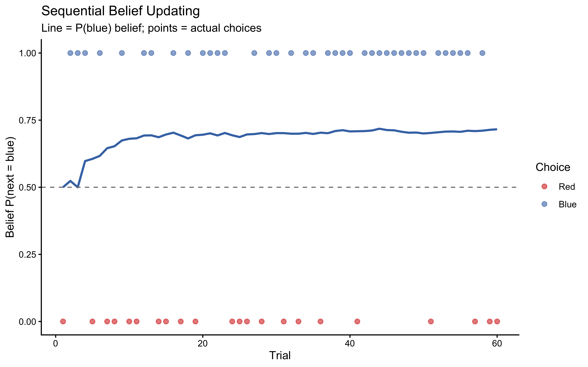
10.15.5 Leave-Future-Out Cross-Validation (LFO-CV)
Once the sequential model has been fitted, out-of-sample evaluation requires LFO-CV (Bürkner, Gabry, & Vehtari, 2020). The idea is straightforward: to evaluate the model’s prediction at trial \(t\), we may only condition on trials \(1, \ldots, t-1\). This preserves the causal arrow of time and makes the evaluation honest.
loo::loo_approximate_leave_future_out() implements this efficiently via importance sampling, avoiding the need to refit the model for each time step. When importance sampling is unreliable (Pareto \(\hat{k} \geq 0.7\)), it triggers an exact refit starting from trial \(L\) (the “refitting threshold”). The minimum number of initial observations used to condition predictions is controlled by M (the warm-up period before the first evaluation point).
Why does LOO fail for sequential models? Standard LOO-CV assumes observations are exchangeable — the model’s prediction for trial t doesn’t change depending on which other trials are held out. In sequential belief-updating, this is violated: trial t’s choice depends causally on trials 1…t-1. Removing a future trial from the fitting set while keeping earlier ones breaks the causal structure. LFO-CV preserves it by only conditioning predictions for trial t on the past.
loo_approximate_leave_future_out <- function(x, unfitted, fit_fun, data, data_fun, M, L) {
# Implementation of Backward PSIS-LFO-CV (Bürkner, Gabry, & Vehtari, 2020)
N <- ncol(x)
out_elpd <- rep(NA, N)
pareto_k <- rep(NA, N)
# In Backward LFO, we start with the full posterior as the proposal
i_star <- N
log_lik_star <- x
# Loop backwards: to predict i+1 given 1:i, we loop i from N-1 down to M
for (i in (N - 1):M) {
# We reweight the proposal (1:i_star) to approximate the target (1:i)
if (i + 1 == i_star) {
log_r <- -log_lik_star[, i_star]
} else {
log_r <- -rowSums(log_lik_star[, (i + 1):i_star, drop = FALSE])
}
psis_obj <- suppressWarnings(loo::psis(log_r))
k <- loo::pareto_k_values(psis_obj)[1]
pareto_k[i + 1] <- k
if (k > L) {
# PSIS failed. To ensure column i+1 exists for our ELPD evaluation,
# we refit the model on exactly 1:(i+1).
i_star <- i + 1
log_lik_star <- fit_fun(data_fun(i_star))
# The new proposal is 1:(i+1). Target is 1:i.
log_r <- -log_lik_star[, i_star]
psis_obj <- suppressWarnings(loo::psis(log_r))
pareto_k[i + 1] <- loo::pareto_k_values(psis_obj)[1]
# Compute ELPD for i+1 given 1:i
log_weights <- weights(psis_obj, log = TRUE)[, 1]
out_elpd[i + 1] <- matrixStats::logSumExp(log_weights + log_lik_star[, i + 1])
} else {
# PSIS succeeded. Compute ELPD for i+1 given 1:i
log_weights <- weights(psis_obj, log = TRUE)[, 1]
out_elpd[i + 1] <- matrixStats::logSumExp(log_weights + log_lik_star[, i + 1])
}
}
# Format output to match standard 'loo' objects for loo_compare()
estimates <- matrix(
c(sum(out_elpd, na.rm = TRUE), NA),
nrow = 1,
dimnames = list("elpd_loo", c("Estimate", "SE"))
)
structure(
list(
estimates = estimates,
pointwise = cbind(elpd_loo = out_elpd),
diagnostics = list(pareto_k = pareto_k)
),
class = "loo"
)
}
# Fit the sequential model to the simulated data first
mod_seq <- cmdstan_model("stan/ch9_sequential_agent.stan")
stan_data_seq <- list(
T = nrow(seq_data),
choice = seq_data$choice,
blue1 = seq_data$blue1,
total1 = seq_data$total1,
blue2 = seq_data$blue2,
total2 = seq_data$total2
)
fit_seq <- if (regenerate_simulations) {
fit <- mod_seq$sample(
data = stan_data_seq,
seed = 501,
chains = 4,
parallel_chains = 4,
iter_warmup = 1000,
iter_sampling = 1000,
refresh = 0
)
fit$save_object("simmodels/ch9_fit_sequential.rds")
fit
} else {
readRDS("simmodels/ch9_fit_sequential.rds")
}## Running MCMC with 4 parallel chains...## Chain 1 finished in 0.1 seconds.
## Chain 2 finished in 0.1 seconds.
## Chain 3 finished in 0.1 seconds.
## Chain 4 finished in 0.1 seconds.
##
## All 4 chains finished successfully.
## Mean chain execution time: 0.1 seconds.
## Total execution time: 2.8 seconds.## Checking sampler transitions treedepth.
## Treedepth satisfactory for all transitions.
##
## Checking sampler transitions for divergences.
## No divergent transitions found.
##
## Checking E-BFMI - sampler transitions HMC potential energy.
## E-BFMI satisfactory.
##
## Rank-normalized split effective sample size satisfactory for all parameters.
##
## Rank-normalized split R-hat values satisfactory for all parameters.
##
## Processing complete, no problems detected.
##
## --- Sequential Agent ---
## Parameters failing thresholds: 0 out of 298# ── LFO-CV ────────────────────────────────────────────────────────────
# log_lik has shape (draws × T). Columns correspond to trials 1 … T.
log_lik_seq <- fit_seq$draws("log_lik", format = "matrix")
# fit_fun is called whenever PSIS is unreliable (k >= threshold).
# It receives a truncated data list (obs 1 … i) and must return a
# matrix of log-likelihood values with columns for future time points.
fit_fun_seq <- function(data_i, ...) {
fit_i <- mod_seq$sample(
data = data_i,
seed = 502,
chains = 2,
iter_warmup = 500,
iter_sampling = 500,
refresh = 0,
show_messages = FALSE
)
fit_i$draws("log_lik", format = "matrix")
}
# data_fun truncates the data list to the first i observations
data_fun_seq <- function(i) {
list(
T = i,
choice = stan_data_seq$choice[seq_len(i)],
blue1 = stan_data_seq$blue1[seq_len(i)],
total1 = stan_data_seq$total1[seq_len(i)],
blue2 = stan_data_seq$blue2[seq_len(i)],
total2 = stan_data_seq$total2[seq_len(i)]
)
}
# M = minimum initial observations before starting LFO evaluation.
# Here we use 10 warm-up trials before evaluating predictive accuracy.
if (regenerate_simulations) {
lfo_result <- loo_approximate_leave_future_out(
x = log_lik_seq,
unfitted = fit_seq,
fit_fun = fit_fun_seq,
data = stan_data_seq,
data_fun = data_fun_seq,
M = 10, # minimum conditioning set
L = 0.7 # Pareto-k refit threshold
)
saveRDS(lfo_result, "simmodels/ch9_lfo_result.rds")
} else {
lfo_result <- readRDS("simmodels/ch9_lfo_result.rds")
}
print(lfo_result$estimates)## Estimate SE
## elpd_loo -32.12673 NAcat("\nLFO-ELPD:", round(lfo_result$estimates["elpd_loo", "Estimate"], 2),
"±", round(lfo_result$estimates["elpd_loo", "SE"], 2), "\n")##
## LFO-ELPD: -32.13 ± NA## Number of refits triggered: 0The lfo_result object has the same structure as a standard loo object and can be passed to loo_compare() to compare two sequential models. For example, comparing the sequential WBA against a simpler sequential model that ignores social evidence is straightforward: fit both, compute lfo_result_1 and lfo_result_2, then call loo_compare(lfo_result_1, lfo_result_2).
10.16 Beyond Weighted Bayes: Circular Inference
The three models above — SBA, PBA, WBA — share a common structural assumption: each source of evidence is counted exactly once. The posterior is the result of adding pseudocounts from direct and social evidence to the prior, with optional rescaling of those counts. This is Bayesian integration without feedback loops.
Simonsen et al. (2021), following Jardri & Denève (2013) and Jardri et al. (2017), found that this assumption is systematically violated — and that the violation is particularly pronounced in patients with schizophrenia. Their best-fitting model was circular inference: a model where evidence from one source is fed back into the system and counted multiple times, as though sensory observations were mistaken for prior beliefs (or vice versa). The result is overcounting: a marble sample that slightly favours blue becomes treated as if it were far stronger evidence than it actually is.
This section introduces the circular inference model, explains why it requires a log-odds parameterisation, implements it in Stan, and shows how to run it through the same validation pipeline established for the WBA.
10.16.1 Why Pseudocounts Are Not Enough for Circular Inference
The pseudocount framework is principled when the data-generating process is binomial and evidence is counted once. Its limitation is that it has no natural way to represent an evidence source being counted more than once. To say that an agent overcounts their direct sample by a factor of \(\alpha > 1\), we need a richer representation.
The key insight is to work on the log-odds (logit) scale. For a Beta(\(\alpha\), \(\beta\)) distribution, the posterior log-odds of blue is: \[\ell = \log\frac{\alpha}{\beta}\]
Under the SBA, after observing \(k\) blue out of \(n\) marbles with Jeffreys prior: \[\ell_\text{self} = \log\frac{0.5 + k}{0.5 + (n - k)}\]
The social signal, treated as \(k_2\) blue out of \(n_2 = 3\), contributes analogously: \[\ell_\text{social} = \log\frac{0.5 + k_2}{0.5 + (3 - k_2)}\]
Under simple Bayes with independent sources, the combined log-odds is: \[\ell_\text{combined} = \ell_\text{prior} + \underbrace{(\ell_\text{self} - \ell_\text{prior})}_{\text{self update}} + \underbrace{(\ell_\text{social} - \ell_\text{prior})}_{\text{social update}}\]
This is simply the sum of log-likelihood ratios — identical to the pseudocount rule but expressed on the log-odds scale.
Circular inference adds overcounting loops. The loop parameter \(\alpha_\text{self} > 1\) for the self source means the self update is amplified: the agent behaves as though they observed not just their own sample but a phantom repetition of it. Formally, the combined log-odds under circular inference is:
\[\ell_\text{combined} = w_s \cdot \alpha_\text{social} \cdot \ell_\text{social} + w_d \cdot \alpha_\text{self} \cdot \ell_\text{self}\]
where \(w_d, w_s\) are trust weights (as in the WBA), and \(\alpha_\text{self}, \alpha_\text{social} \geq 1\) are the loop (overcounting) parameters. When \(\alpha = 1\) and \(w = 1\) for both sources, the model reduces to simple Bayes. When \(\alpha_\text{self} > 1\), the direct-evidence log-odds is magnified — small differences between marble counts have disproportionate effects on the posterior.
Why not pseudocounts for overcounting? One might try to represent overcounting by multiplying the pseudocount weight: \(w_d > 1\) in the WBA already does this. The difference is that circular inference combines the overcounting (\(\alpha\)) with a separate trust/discount parameter (\(w\)), allowing the model to represent, for example, an agent who overcounts but does not fully trust a source. More importantly, on the log-odds scale the overcounting enters as a multiplicative factor on the log-likelihood ratio, not on the raw counts — which is the correct formulation when thinking about precision-weighted belief propagation in the hierarchical predictive coding framework (Jardri & Denève, 2013).
10.16.2 Connecting Log-Odds and Pseudocounts
The two parameterisations are related but not equivalent. The pseudocount WBA applies weights to counts before adding to the Beta parameters: \[\alpha_\text{post} = 0.5 + w_d k_1 + w_s k_2\]
The log-odds circular inference model applies weights to log-likelihood ratios after computing them from the counts. They produce the same posterior mean only in special cases (e.g., when the prior is flat and the evidence is symmetric). For most trial configurations they differ, and the circular inference model additionally introduces asymmetry between weak and strong evidence: amplifying a logit of 0.1 by a factor of 3 gives 0.3, but amplifying a logit of 2.0 gives 6.0 — whereas the pseudocount model scales counts linearly regardless of where they sit relative to 0.5. This is why circular inference better captures the qualitative finding that patients in Simonsen et al. (2021) showed steeper response curves (greater sensitivity to small differences in their own sample) rather than simply a uniform upward shift in how much they trusted themselves.
10.16.3 The Circular Inference Agent: R Implementation
# Compute the posterior log-odds under circular inference.
# Parameters:
# blue1, total1 : direct evidence counts
# blue2, total2 : social evidence counts (encoded)
# w_self, w_other: trust weights (as in WBA)
# alpha_self, alpha_other: loop / overcounting parameters (>= 1 for overcounting)
# alpha0, beta0 : prior pseudo-counts (Jeffreys: 0.5)
#
# Returns: list with log_odds_combined, p_blue, choice
circularInferenceModel <- function(
blue1, total1,
blue2, total2,
w_self = 1, w_other = 1,
alpha_self = 1, alpha_other = 1,
alpha0 = 0.5, beta0 = 0.5
) {
# Log-odds of each source's posterior (Jeffreys prior)
lo_self <- log((alpha0 + blue1) / (beta0 + total1 - blue1))
lo_social <- log((alpha0 + blue2) / (beta0 + total2 - blue2))
lo_prior <- log(alpha0 / beta0) # = 0 for Jeffreys
# Combined log-odds: weight * overcount * log-likelihood-ratio
lo_combined <- w_self * alpha_self * (lo_self - lo_prior) +
w_other * alpha_other * (lo_social - lo_prior) +
lo_prior
p_blue <- plogis(lo_combined) # inverse logit
list(
lo_self = lo_self,
lo_social = lo_social,
lo_combined = lo_combined,
p_blue = p_blue,
choice = ifelse(p_blue > 0.5, "Blue", "Red")
)
}
# Visualise: compare WBA (pseudocount) vs. circular inference across evidence grid
ci_comparison <- expand_grid(blue1 = 0:8, blue2 = 0:3) |>
mutate(
# WBA with w_d = 1, w_s = 0.5 (somewhat self-focused)
wba_p = map2_dbl(blue1, blue2, ~ {
ap <- 0.5 + 1.0 * .x + 0.5 * .y
bp <- 0.5 + 1.0 * (8 - .x) + 0.5 * (3 - .y)
ap / (ap + bp)
}),
# Circular inference: same weights but alpha_self = 3 (strong overcounting)
ci_p = map2_dbl(blue1, blue2, ~ {
circularInferenceModel(
blue1 = .x, total1 = 8,
blue2 = .y, total2 = 3,
w_self = 1, w_other = 0.5,
alpha_self = 3, alpha_other = 1
)$p_blue
}),
social_evidence = factor(
blue2, levels = 0:3,
labels = c("Clear Red", "Maybe Red", "Maybe Blue", "Clear Blue")
)
)
ci_long <- ci_comparison |>
pivot_longer(c(wba_p, ci_p), names_to = "model", values_to = "p_blue") |>
mutate(model = recode(model,
"wba_p" = "WBA (w_d=1, w_s=0.5)",
"ci_p" = "Circular (w_d=1, w_s=0.5, α_self=3)"))
ggplot(ci_long, aes(x = blue1, y = p_blue,
colour = social_evidence, group = social_evidence)) +
geom_line(linewidth = 1) +
geom_point(size = 2) +
geom_hline(yintercept = 0.5, linetype = "dashed", colour = "grey50") +
facet_wrap(~ model) +
scale_colour_brewer(palette = "Set1") +
scale_x_continuous(breaks = 0:8) +
coord_cartesian(ylim = c(0, 1)) +
labs(
title = "WBA vs. Circular Inference: Response Curves",
subtitle = "Circular inference steepens the self-evidence curves without uniformly raising them",
x = "Blue marbles in direct sample",
y = "P(choose blue)",
colour = "Social evidence"
) +
theme(legend.position = "bottom")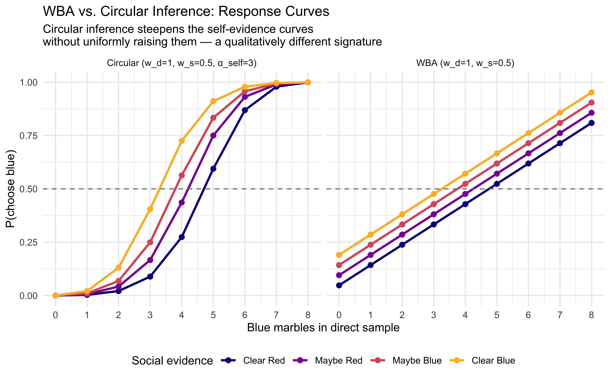
The key visual signature of circular inference is steeper, more compressed response curves for the self source, with a reduced spread across social evidence conditions — exactly the pattern Simonsen et al. (2021) report for their schizophrenia group (their Figure 2, bottom row). The WBA can shift curves up or down via \(w_d\), but cannot produce the steepening-without-uniform-shift that overcounting creates.
10.16.4 Stan Implementation: Circular Inference Agent
The model works on the log-odds scale throughout. For each trial \(i\):
- Compute the log-likelihood ratio of direct evidence: \(\lambda_\text{self,i} = \log\frac{0.5 + k_{1,i}}{0.5 + (n_1 - k_{1,i})}\)
- Compute the log-likelihood ratio of social evidence: \(\lambda_\text{social,i} = \log\frac{0.5 + k_{2,i}}{0.5 + (n_2 - k_{2,i})}\)
- Combine with weights and loop parameters: \(\ell_i = w_d \cdot \alpha_d \cdot \lambda_\text{self,i} + w_s \cdot \alpha_s \cdot \lambda_\text{social,i}\)
- Convert to probability via the inverse logit: \(p_i = \text{logit}^{-1}(\ell_i)\)
- Observe the binary choice: \(y_i \sim \text{Bernoulli}(p_i)\)
Note that the likelihood is now Bernoulli, not BetaBinomial. The BetaBinomial was appropriate because the pseudocount parameterisation preserved explicit Beta uncertainty about \(\theta\). On the log-odds scale, the belief is represented as a single real number \(\ell\); uncertainty is implicitly captured by the prior-to-posterior spread across the parameter space, not by a distributional form inside each trial’s likelihood.
CircularAgent_stan <- "
// Circular Inference Agent (Jardri & Deneve 2013; Jardri et al. 2017).
// Works on the log-odds scale.
// Parameters:
// w_self, w_other : trust weights (positive; <1 = discount, >1 = overtrust)
// alpha_self, alpha_other : loop / overcounting parameters (>= 1 for CI)
// When alpha = 1 and w = 1 for both sources, reduces to simple Bayes.
// When alpha = 1, reduces to Weighted Bayes on the log-odds scale.
//
// NOTE: The likelihood is Bernoulli, not BetaBinomial.
// The BetaBinomial models explicit Beta uncertainty about theta and is natural
// in the pseudocount framework. Here beliefs are represented as a single
// log-odds value; the Bernoulli likelihood is the appropriate observation model.
data {
int<lower=1> N;
array[N] int<lower=0, upper=1> choice;
array[N] int<lower=0> blue1;
array[N] int<lower=0> total1; // = 8 throughout
array[N] int<lower=0> blue2;
array[N] int<lower=0> total2; // = 3 throughout
}
transformed data {
// Jeffreys prior pseudo-counts — same as in the WBA for comparability
real alpha0 = 0.5;
real beta0 = 0.5;
// Log-prior log-odds (= 0 for Jeffreys since alpha0 = beta0)
real lo_prior = log(alpha0 / beta0);
}
parameters {
// Trust weights: positive, log-normal prior matching the WBA
real<lower=0> w_self;
real<lower=0> w_other;
// Loop parameters: >= 1. Parameterised as 1 + exp(raw) so the unconstrained
// sampler works on an unbounded real; alpha = 1 corresponds to raw = -Inf
// (standard Bayes). We use a weakly regularising half-normal prior on (alpha - 1).
real<lower=0> alpha_self_m1; // alpha_self = 1 + alpha_self_m1
real<lower=0> alpha_other_m1; // alpha_other = 1 + alpha_other_m1
}
transformed parameters {
real<lower=1> alpha_self = 1.0 + alpha_self_m1;
real<lower=1> alpha_other = 1.0 + alpha_other_m1;
}
model {
// Priors
// Weights: lognormal(0, 0.5) as in WBA — spans underweighting to overweighting
target += lognormal_lpdf(w_self | 0, 0.5);
target += lognormal_lpdf(w_other | 0, 0.5);
// Loop parameters: half-normal(0, 1) on the excess above 1.
// Concentrates mass near alpha = 1 (no overcounting) with moderate regularisation.
// A value of alpha_self_m1 ~ 2 implies alpha_self ~ 3, which is already strong CI.
target += normal_lpdf(alpha_self_m1 | 0, 1) - normal_lccdf(0 | 0, 1);
target += normal_lpdf(alpha_other_m1 | 0, 1) - normal_lccdf(0 | 0, 1);
// Likelihood
for (i in 1:N) {
// Log-likelihood ratios (log-odds of each source relative to prior)
real lo_self_i = log((alpha0 + blue1[i]) /
(beta0 + total1[i] - blue1[i]));
real lo_social_i = log((alpha0 + blue2[i]) /
(beta0 + total2[i] - blue2[i]));
// Circular-inference combined log-odds
real lo_combined = w_self * alpha_self * (lo_self_i - lo_prior) +
w_other * alpha_other * (lo_social_i - lo_prior) +
lo_prior;
target += bernoulli_logit_lpmf(choice[i] | lo_combined);
}
}
generated quantities {
vector[N] log_lik;
array[N] int prior_pred;
array[N] int posterior_pred;
// Prior samples for predictive checks
real ws_pr = lognormal_rng(0, 0.5);
real wo_pr = lognormal_rng(0, 0.5);
real as_pr = 1.0 + abs(normal_rng(0, 1));
real ao_pr = 1.0 + abs(normal_rng(0, 1));
for (i in 1:N) {
real lo_self_i = log((alpha0 + blue1[i]) /
(beta0 + total1[i] - blue1[i]));
real lo_social_i = log((alpha0 + blue2[i]) /
(beta0 + total2[i] - blue2[i]));
// Posterior
real lo_post = w_self * alpha_self * (lo_self_i - lo_prior) +
w_other * alpha_other * (lo_social_i - lo_prior) +
lo_prior;
log_lik[i] = bernoulli_logit_lpmf(choice[i] | lo_post);
posterior_pred[i] = bernoulli_logit_rng(lo_post);
// Prior predictive
real lo_prior_pred = ws_pr * as_pr * (lo_self_i - lo_prior) +
wo_pr * ao_pr * (lo_social_i - lo_prior) +
lo_prior;
prior_pred[i] = bernoulli_logit_rng(lo_prior_pred);
}
}
"
write_stan_file(CircularAgent_stan,
dir = "stan/",
basename = "ch9_circular_agent.stan")## [1] "/Users/au209589/Dropbox/Teaching/AdvancedCognitiveModeling23_book/stan/ch9_circular_agent.stan"10.16.5 Prior Predictive Check: Circular Inference Agent
# Sample prior parameters and examine what choice distributions they imply
set.seed(42)
n_prior <- 3000
ci_prior_samples <- tibble(
w_self = rlnorm(n_prior, 0, 0.5),
w_other = rlnorm(n_prior, 0, 0.5),
alpha_self = 1 + abs(rnorm(n_prior, 0, 1)),
alpha_other = 1 + abs(rnorm(n_prior, 0, 1))
)
# For a fixed evidence grid, compute p_blue under each prior draw
alpha0 <- beta0 <- 0.5
lo_prior_val <- log(alpha0 / beta0) # = 0
ci_ppc_grid <- expand_grid(blue1 = c(2, 4, 6), blue2 = 0:3) |>
crossing(draw = seq_len(200)) |>
left_join(ci_prior_samples |> mutate(draw = row_number()), by = "draw") |>
mutate(
lo_self_i = log((alpha0 + blue1) / (beta0 + 8 - blue1)),
lo_social_i = log((alpha0 + blue2) / (beta0 + 3 - blue2)),
lo_combined = w_self * alpha_self * (lo_self_i - lo_prior_val) +
w_other * alpha_other * (lo_social_i - lo_prior_val) +
lo_prior_val,
p_blue = plogis(lo_combined),
choice = rbinom(n(), 1, p_blue)
) |>
group_by(blue1, blue2) |>
summarise(p_prior_pred = mean(choice), .groups = "drop") |>
mutate(
social_evidence = factor(
blue2, levels = 0:3,
labels = c("Clear Red", "Maybe Red", "Maybe Blue", "Clear Blue")
),
blue1_label = paste("Direct:", blue1, "/ 8")
)
ggplot(ci_ppc_grid, aes(x = social_evidence, y = p_prior_pred,
group = blue1_label, colour = blue1_label)) +
geom_line(linewidth = 1) +
geom_point(size = 3) +
geom_hline(yintercept = 0.5, linetype = "dashed", colour = "grey50") +
coord_cartesian(ylim = c(0, 1)) +
scale_colour_manual(values = c("#d73027", "#4575b4", "#1a9641")) +
labs(
title = "Prior Predictive Check: Circular Inference Agent",
subtitle = "Marginalising 200 prior draws. Priors should not force extreme predictions.",
x = "Social evidence",
y = "Prior-predicted P(choose blue)",
colour = "Direct evidence"
) +
theme(legend.position = "bottom")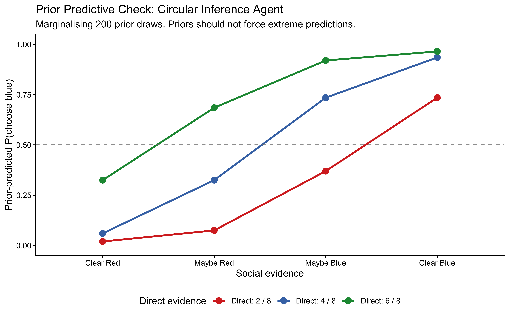
10.16.6 Simulation-Based Calibration: Circular Inference Agent
if (regenerate_simulations) {
N_sbc_ci <- stan_data_self_focused$N
sbc_generator_ci <- SBC_generator_function(
function(N) {
ws <- rlnorm(1, 0, 0.5)
wo <- rlnorm(1, 0, 0.5)
as_m1 <- abs(rnorm(1, 0, 1))
ao_m1 <- abs(rnorm(1, 0, 1))
as_ <- 1 + as_m1
ao_ <- 1 + ao_m1
ev <- evidence_combinations |> slice_sample(n = N, replace = TRUE)
lo_p <- log(0.5 / 0.5) # = 0
lo_s <- log((0.5 + ev$blue1) / (0.5 + ev$total1 - ev$blue1))
lo_o <- log((0.5 + ev$blue2) / (0.5 + ev$total2 - ev$blue2))
lo_c <- ws * as_ * (lo_s - lo_p) + wo * ao_ * (lo_o - lo_p) + lo_p
p <- plogis(lo_c)
choices <- rbinom(N, 1, p)
list(
variables = list(
w_self = ws,
w_other = wo,
alpha_self_m1 = as_m1,
alpha_other_m1 = ao_m1
),
generated = list(
N = N,
choice = choices,
blue1 = ev$blue1,
total1 = ev$total1,
blue2 = ev$blue2,
total2 = ev$total2
)
)
},
N = N_sbc_ci
)
sbc_datasets_ci <- generate_datasets(sbc_generator_ci, 500)
sbc_backend_ci <- SBC::SBC_backend_cmdstan_sample(
mod_circular,
chains = 2,
iter_warmup = 500,
iter_sampling = 500,
parallel_chains = 2,
refresh = 0,
show_messages = FALSE
)
sbc_results_ci <- compute_SBC(sbc_datasets_ci, sbc_backend_ci, keep_fits = FALSE)
saveRDS(sbc_results_ci, "simmodels/ch9_sbc_ci_results.rds")
} else {
sbc_results_ci <- readRDS("simmodels/ch9_sbc_ci_results.rds")
}
SBC::plot_ecdf_diff(
sbc_results_ci,
variables = c("w_self", "w_other", "alpha_self_m1", "alpha_other_m1")
) +
labs(
title = "SBC Calibration: Circular Inference Agent",
subtitle = "500 datasets. The loop parameters (alpha_*_m1) are harder to identify\nthan weights — expect wider bands if evidence is near-unanimous."
)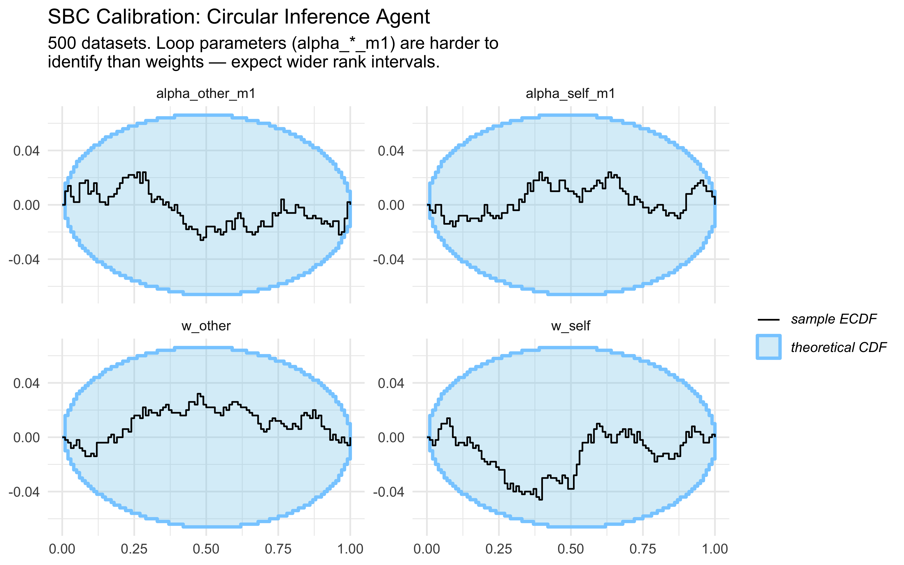
Identifiability note — Circular Inference: Separating \(w_\text{self}\) from \(\alpha_\text{self}\) requires trials where evidence is neither at ceiling nor floor: a sample of 0 or 8 produces the same log-likelihood ratio regardless of \(\alpha\), because \(\alpha \times 0 = 0\). Trials with intermediate evidence (3–5 blue of 8) are most informative for the loop parameters. In the 9 × 4 evidence grid the intermediate trials are plentiful, but SBC may still show wider calibration bands for \(\alpha\) than for \(w\) — this is expected and not a failure of the model.
10.16.7 Fitting the Circular Inference Agent to Simulated Data
We now fit the model to self-focused agent data (the agent most likely to show an overcounting pattern) and compare it to the WBA.
fit_circular_self <- if (regenerate_simulations) {
fit <- mod_circular$sample(
data = stan_data_self_focused,
seed = 601,
chains = 4,
parallel_chains = 4,
iter_warmup = 1000,
iter_sampling = 1000,
refresh = 0
)
fit$save_object("simmodels/ch9_fit_circular_self.rds")
fit
} else {
readRDS("simmodels/ch9_fit_circular_self.rds")
}## Running MCMC with 4 parallel chains...## Chain 1 finished in 0.9 seconds.
## Chain 2 finished in 0.9 seconds.
## Chain 3 finished in 0.9 seconds.
## Chain 4 finished in 0.9 seconds.
##
## All 4 chains finished successfully.
## Mean chain execution time: 0.9 seconds.
## Total execution time: 4.1 seconds.## Checking sampler transitions treedepth.
## Treedepth satisfactory for all transitions.
##
## Checking sampler transitions for divergences.
## No divergent transitions found.
##
## Checking E-BFMI - sampler transitions HMC potential energy.
## E-BFMI satisfactory.
##
## Rank-normalized split effective sample size satisfactory for all parameters.
##
## Rank-normalized split R-hat values satisfactory for all parameters.
##
## Processing complete, no problems detected.
##
## --- Circular Inference — Self-Focused ---
## Parameters failing thresholds: 0 out of 551# Parameter summary
fit_circular_self$summary(
variables = c("w_self", "w_other", "alpha_self", "alpha_other")
) |>
knitr::kable(digits = 3,
caption = "Circular Inference posteriors: Self-Focused agent")| variable | mean | median | sd | mad | q5 | q95 | rhat | ess_bulk | ess_tail |
|---|---|---|---|---|---|---|---|---|---|
| w_self | 0.744 | 0.731 | 0.194 | 0.203 | 0.443 | 1.077 | 1.001 | 1696.679 | 1741.989 |
| w_other | 0.266 | 0.261 | 0.073 | 0.071 | 0.156 | 0.393 | 1.000 | 1981.253 | 1753.005 |
| alpha_self | 1.528 | 1.430 | 0.412 | 0.373 | 1.047 | 2.312 | 1.002 | 1381.319 | 1406.036 |
| alpha_other | 1.216 | 1.148 | 0.216 | 0.147 | 1.012 | 1.641 | 1.002 | 1656.045 | 1654.887 |
10.16.8 Model Comparison: WBA vs. Circular Inference
We compare the four-parameter circular inference model against the two-parameter WBA using PSIS-LOO. The WBA is the simpler model; if the CI model wins convincingly, it implies that the overcounting/amplification structure — not just differential trust — is needed to describe the data.
# Fit WBA to same self-focused data if not already done above
# (fit_weighted_self_focused should already exist from Phase 2)
loo_circular_self <- loo(fit_circular_self$draws("log_lik", format = "matrix"))
cat("=== Model Comparison: WBA vs. Circular Inference (Self-Focused agent) ===\n")## === Model Comparison: WBA vs. Circular Inference (Self-Focused agent) ===## elpd_diff se_diff
## WBA 0.0 0.0
## CI -2.4 1.9diff_ratio <- abs(ci_vs_wba[2, "elpd_diff"] / ci_vs_wba[2, "se_diff"])
cat(sprintf("\n|ELPD diff| / SE = %.2f\n", diff_ratio))##
## |ELPD diff| / SE = 1.26ci_wba_weights <- loo_model_weights(
list(WBA = loo_weighted_self, CI = loo_circular_self),
method = "stacking"
)
cat("\nBayesian stacking weights:\n")##
## Bayesian stacking weights:## Method: stacking
## ------
## weight
## WBA 1.000
## CI 0.000Expected pattern: Because the simulated agent was generated by the WBA (pseudocount model with \(w_d = 1.5\), \(w_s = 0.5\)) rather than by circular inference, the WBA should outperform or be competitive with the CI model for these data. If the CI model wins substantially, it would signal that the response steepening produced by overcounting provides a better fit to the binary choice data than differential pseudocount scaling — an interesting empirical question that would warrant further investigation.
10.16.9 Discussion: When to Use Each Parameterisation
The three parameterisations explored in this chapter make different claims about the data-generating process:
Pseudocount (SBA/PBA/WBA): The mind treats each source as an independent binomial sample. Evidence is counted once, with optional rescaling. This is the natural model when the task explicitly provides counts (e.g., marbles) and the cognitive hypothesis is about differential trust or attention. The pseudocount framework directly reflects the experiment’s design.
Log-odds weighted (WBA on log-LR scale): Mathematically equivalent to the pseudocount WBA on certain evidence configurations, but conceptually different: evidence is represented as a log-likelihood ratio and trust weights scale that ratio. The difference becomes meaningful when sources have very different raw sample sizes — working on the log-LR scale makes the weights commensurable across sources.
Circular inference (Jardri & Denève 2013): Evidence is not merely weighted but potentially amplified beyond its face value. The overcounting parameter \(\alpha > 1\) represents a failure of the inference system to maintain the balance between sensory input and prior belief, so that signals are fed back into themselves. This parameterisation requires the log-odds scale because overcounting is most naturally described as multiplicative amplification of a log-likelihood ratio. Its key predictive signature — steeper response curves for the amplified source, with curves collapsing toward a common level for the discounted source — cannot be reproduced by pseudocount weighting alone.
The choice between these models should be driven by the scientific question and validated by LOO model comparison. For a course task where the goal is to understand differential trust, the WBA is appropriate. For a clinical research question about whether patients overcount direct experience at a mechanistic level, circular inference is the scientifically motivated model.
10.16.10 What the Bayesian Workflow Adds
This chapter has done more than fit cognitive models — it has certified them through a disciplined pipeline. Prior predictive checks established that the priors of all three models are cognitively plausible. SBC certified that the Stan samplers for the WBA and PBA are unbiased. Single-fit recovery confirmed identifiability. LOO-PIT and sensitivity analysis characterised the limits of the fitted posteriors. The three-way PSIS-LOO comparison arbitrated between competing cognitive hypotheses in a way that penalises complexity and estimates genuine predictive performance.
This pipeline is not bureaucracy. Without SBC, a subtle Stan implementation bug could produce attractive posteriors that are systematically biased. Without LOO-PIT, we cannot distinguish a model that fits from a model that truly predicts. Without the three-way comparison, we cannot know whether the WBA’s additional parameter reflects a real cognitive structure or mere overfitting.
10.16.11 Limitations of the Current Models
Trial independence in non-sequential models. The SBA, PBA, and WBA assume each trial involves a fresh, independent jar. This is true in Simonsen et al.’s design but is often violated in other social learning tasks. Applying these models to paradigms with across-trial structure requires the sequential extension — with LFO-CV.
Noise-free decision rule. All three models use the Beta posterior mean as a deterministic decision input via the BetaBinomial sampling step. A more realistic model would add an explicit response noise parameter (e.g., a logistic softmax with inverse temperature), at the cost of one additional parameter to identify.
Fixed prior pseudo-count. We fix \(\alpha_0 = \beta_0 = 0.5\) (Jeffreys prior), assuming no prior knowledge about the jar before sampling begins. If participants bring domain knowledge (e.g., “jars tend to be mostly one colour”), this assumption is violated. A hierarchical extension in the spirit of Chapter 6 would estimate a population distribution over \((\alpha_0, \beta_0)\).
The PBA’s identifiability boundary. When \(p \to 0\) or \(p \to 1\), one evidence source is entirely ignored. The Beta(2,2) prior keeps the sampler away from these boundaries, but if the true agent strongly ignores one source, the posterior will approach the boundary and ESS may degrade. In practice, check tail ESS for the PBA whenever it is fitted to strongly asymmetric agents.
Social evidence encoding and pool-size asymmetry. Social evidence is encoded as
total2 = 3pseudo-marbles, approximating the other person’s compressed choice-plus-confidence signal. This makes direct and social evidence structurally asymmetric: even at unit weights, direct evidence can push the posterior up to 2.67× more than social evidence. The pseudocount combination rule is exact under the assumption that both sources are independent, equally calibrated binomial draws from the same jar at their respective sample sizes — violations of this assumption, such as the social signal being systematically over- or under-confident relative to the true marble counts, cannot be detected from the current data alone. The pseudocount framework was preferred over working on the log-odds of each source’s posterior precisely because it makes this data-generating-process assumption explicit: if both sources truly are independent binomial observations, adding pseudocounts is the exact conjugate update, and any discrepancy between fitted weights and 1.0 is directly interpretable as a departure from optimal integration. Log-odds parameterisations become necessary, however, when the model needs to represent overcounting — information being fed back into itself — which is what the circular inference model in the next section requires.
10.16.12 Connections and Extensions
- Rational inattention models relax the assumption that all evidence is perfectly observed — agents pay a cognitive cost to process information and may optimally sample below capacity.
- Resource-rational models (Griffiths et al. 2015) ask: what integration strategy is optimal given limited computational resources?
- Active inference (Friston 2010) frames perception and action as a unified process of minimising variational free energy — a generalisation of Bayesian inference that predicts both beliefs and choices in a coupled system.
This is the end of the core modelling sequence. Chapters 1–9 have traced the complete Bayesian cognitive modelling workflow: from pizza-stone physics (Ch. 1), through verbal and formal models of strategic behaviour (Chs. 2–3), parameter estimation (Ch. 4), model validation (Ch. 5), hierarchical extensions (Ch. 6), model comparison (Ch. 7), mixture structures (Ch. 8), and Bayesian cognitive theory (Ch. 9). The tools and habits of mind established here — generative modelling, principled validation, honest uncertainty — apply directly to any new domain or model you encounter.
10.17 Further Reading
- Ma, W. J., Kording, K. P., & Goldreich, D. (2023). Bayesian models of perception and action: An introduction. MIT Press.
- Griffiths, T. L., Chater, N., & Tenenbaum, J. B. (Eds.). (2024). Bayesian models of cognition: Reverse engineering the mind. MIT Press.
- Goodman, N. D., Tenenbaum, J. B., & The ProbMods Contributors (2016). Probabilistic Models of Cognition (2nd ed.). https://probmods.org/
- Bürkner, P.-C., Gabry, J., & Vehtari, A. (2020). Approximate leave-future-out cross-validation for Bayesian time series models. Journal of Statistical Computation and Simulation, 90(14), 2499–2523.
- Säilynoja, T., Bürkner, P.-C., & Vehtari, A. (2022). Graphical test for discrete uniformity and its applications in goodness-of-fit evaluation and multiple sample comparison. Statistics and Computing, 32, 32.
- Gabry, J., Simpson, D., Vehtari, A., Betancourt, M., & Gelman, A. (2019). Visualization in Bayesian workflow. Journal of the Royal Statistical Society: Series A, 182(2), 389–402.
- Simonsen, A., et al. (2021). Computationally defined markers of uncertainty in the theory of mind predict the severity of clinical symptoms in schizophrenia. Schizophrenia Bulletin.